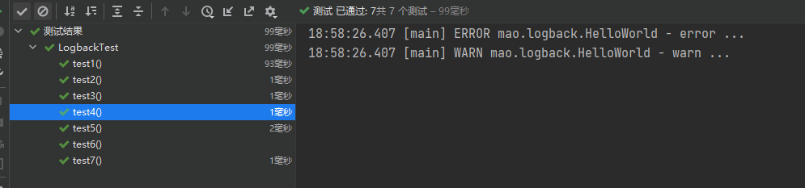
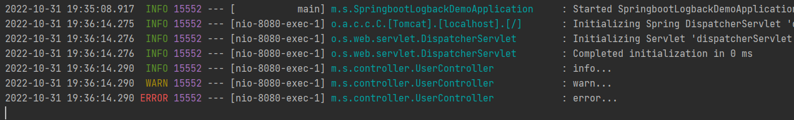
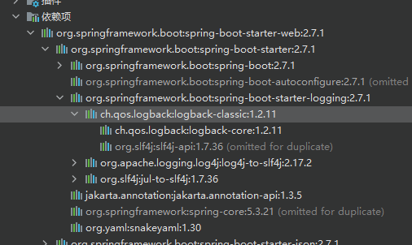
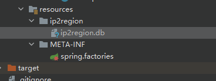
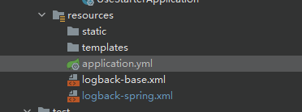

logback介绍logback层级logback日志输出等级logback初始化步骤logback入门案例案例一第一步：创建maven工程logback_demo第二步：修改pom文件第三步：编写单元测试案例二第一步：创建springboot工程springboot_logback_demo第二步：修改pom文件第三步：在resources下编写logback配置文件logback-base.xml第四步：在resources下编写logback配置文件logback-spring.xml第五步：编写application.yml文件第六步：创建并编写UserController第七步：启动并访问Spring Event介绍Spring Event入门案例自定义spring boot starter开发starter第一步：初始化项目第二步：修改pom文件第三步：编写工具类AddressUtil第四步：编写工具类LogUtil第五步：编写工具类NumberHelper第六步：编写工具类StrHelper第七步：编写类ApplicationLoggerInitializer第八步：编写接口BaseExceptionCode第九步：编写类ExceptionCode第十步：编写接口BaseException第十一步：编写类BaseUncheckedException第十二步：编写类BizException第十三步：编写实体类OptLogDTO第十四步：编写实体类R<T>第十五步：编写类SysLogEvent第十六步：编写类SysLogListener第十七步：编写常量工具类BaseContextConstants第十八步：编写类BaseContextHandler第十九步：编写注解SysLog第二十步：编写类SysLogAspect第二十一步：编写配置类LogAutoConfiguration第二十二步：拷贝下载的ip2region.db文件到资源目录下第二十三步：编写spring.factories文件使用starter第一步：导入tools-log的依赖第二步：拷贝logback的配置文件到此项目的资源目录中第三步：编写LogService第四步：修改application.yml文件第五步：编写UserController第六步：编写配置类LogAutoConfig第七步：启动程序第八步：访问第九步：更改UserController第十步：重启服务并访问
--
logback
介绍
Logback继承自log4j。Logback的架构非常的通用，适用于不同的使用场景。

logback和Log4j都是slf4j规范的具体实现，我们在程序中直接调用的API其实都是slf4j的api，底层则是真正的日志实现组件---logback或者log4j。
Logback 构建在三个主要的类上：Logger，Appender 和 Layout。这三个不同类型的组件一起作用能够让开发者根据消息的类型以及日志的级别来打印日志。
Logger作为日志的记录器，把它关联到应用的对应的context后，主要用于存放日志对象，也可以定义日志类型、级别。各个logger 都被关联到一个 LoggerContext，LoggerContext负责制造logger，也负责以树结构排列各 logger。
Appender主要用于指定日志输出的目的地，目的地可以是控制台、文件、 数据库等。
Layout 负责把事件转换成字符串，输出格式化的日志信息。
logback的maven坐标：
xxxxxxxxxx101<dependency>2 <groupId>ch.qos.logback</groupId>3 <artifactId>logback-classic</artifactId>4 <version>1.2.3</version>5</dependency>6<dependency>7 <groupId>ch.qos.logback</groupId>8 <artifactId>logback-core</artifactId>9 <version>1.2.3</version>10</dependency>
logback层级
在 logback中每一个 logger 都依附在 LoggerContext 上，它负责产生 logger，并且通过一个树状的层级结构来进行管理。
一个 Logger 被当作为一个实体，它们的命名是大小写敏感的，并且遵循以下规则：
- 如果一个logger的名字加上一个.作为另一个logger名字的前缀，那么该logger就是另一个logger的祖先。如果一个logger与另一个logger之间没有其它的logger，则该logger就是另一个logger的父级。
在logback中有一个root logger，它是logger层次结构的最高层，它是一个特殊的logger，因为它是每一个层次结构的一部分
logback日志输出等级
logback的日志输出等级分为：TRACE, DEBUG, INFO, WARN, ERROR。
如果一个给定的logger没有指定一个日志输出等级，那么它就会继承离它最近的一个祖先的层级。
为了确保所有的logger都有一个日志输出等级，root logger会有一个默认输出等级 --- DEBUG。
logback初始化步骤
- logback会在类路径下寻找名为logback-test.xml的文件
- 如果没有找到，logback会继续寻找名为logback.groovy的文件
- 如果没有找到，logback会继续寻找名为logback.xml的文件
- 如果没有找到，将会在类路径下寻找文件META-INFO/services/ch.qos.logback.classic.spi.Configurator，该文件的内容为实现了Configurator接口的实现类的全限定类名
- 如果以上都没有成功，logback会通过BasicConfigurator为自己进行配置，并且日志将会全部在控制台打印出来
最后一步的目的是为了保证在所有的配置文件都没有被找到的情况下，提供一个默认的配置。
logback入门案例
案例一
第一步：创建maven工程logback_demo

第二步：修改pom文件
xxxxxxxxxx651 2<project xmlns="http://maven.apache.org/POM/4.0.0"3 xmlns:xsi="http://www.w3.org/2001/XMLSchema-instance"4 xsi:schemaLocation="http://maven.apache.org/POM/4.0.0 http://maven.apache.org/xsd/maven-4.0.0.xsd">5 <modelVersion>4.0.0</modelVersion>6 <!--7 -maven项目核心配置文件-8 Project name(项目名称)：logback_demo9 Author(作者）: mao10 Author QQ：129619324511 GitHub：https://github.com/maomao124/12 Date(创建日期)： 2022/10/3113 Time(创建时间)： 18:5214 -->15 <groupId>mao</groupId>16 <artifactId>logback_demo</artifactId>17 <version>1.0</version>18
19 <properties>20 <maven.compiler.source>16</maven.compiler.source>21 <maven.compiler.target>16</maven.compiler.target>22 </properties>23 24 <dependencies>25
26 <dependency>27 <groupId>ch.qos.logback</groupId>28 <artifactId>logback-classic</artifactId>29 <version>1.3.4</version>30 </dependency>31 <dependency>32 <groupId>ch.qos.logback</groupId>33 <artifactId>logback-core</artifactId>34 <version>1.3.4</version>35 </dependency>36
37 <!-- 测试框架 -->38 <dependency>39 <groupId>org.junit.jupiter</groupId>40 <artifactId>junit-jupiter</artifactId>41 <version>RELEASE</version>42 <scope>test</scope>43 </dependency>44
45 </dependencies>46
47 <build>48 <finalName>logback_demo</finalName>49 <plugins>50 <plugin>51 <groupId>org.apache.maven.plugins</groupId>52 <artifactId>maven-jar-plugin</artifactId>53 <configuration>54 <archive>55 <manifest>56 <mainClass>Test</mainClass>57 <!--更改项，主类名-->58 </manifest>59 </archive>60 </configuration>61 </plugin>62 </plugins>63 </build>64
65</project>
第三步：编写单元测试
xxxxxxxxxx1121package mao;2
3import ch.qos.logback.classic.Level;4import ch.qos.logback.classic.LoggerContext;5import ch.qos.logback.core.util.StatusPrinter;6import org.junit.jupiter.api.Test;7import org.slf4j.Logger;8import org.slf4j.LoggerFactory;9
10/**11 * Project name(项目名称)：logback_demo12 * Package(包名): mao13 * Class(类名): LogbackTest14 * Author(作者）: mao15 * Author QQ：129619324516 * GitHub：https://github.com/maomao124/17 * Date(创建日期)： 2022/10/3118 * Time(创建时间)： 18:5619 * Version(版本): 1.020 * Description(描述)： 无21 */22
23
24public class LogbackTest25{26 //简单使用27 28 public void test1()29 {30 Logger logger = LoggerFactory.getLogger("mao.logback.HelloWorld");31 logger.debug("debug ...");32 }33
34 //打印日志内部状态35 36 public void test2()37 {38 Logger logger = LoggerFactory.getLogger("mao.logback.HelloWorld");39 logger.debug("debug ...");40 // 打印内部的状态41 LoggerContext lc = (LoggerContext) LoggerFactory.getILoggerFactory();42 StatusPrinter.print(lc);43 }44
45 /*46 * 日志输出级别：ERROR > WARN > INFO > DEBUG > TRACE47 * */48
49 //测试默认的日志输出级别50 51 public void test3()52 {53 Logger logger = LoggerFactory.getLogger("mao.logback.HelloWorld");54 logger.error("error ...");55 logger.warn("warn ...");56 logger.info("info ...");57 logger.debug("debug ...");58 //因为默认的输出级别为debug，所以这一条日志不会输出59 logger.trace("trace ...");60 }61
62 //设置日志输出级别63 64 public void test4()65 {66 ch.qos.logback.classic.Logger logger = (ch.qos.logback.classic.Logger) LoggerFactory.getLogger("mao.logback.HelloWorld");67 logger.setLevel(Level.WARN);68 logger.error("error ...");69 logger.warn("warn ...");70 logger.info("info ...");71 logger.debug("debug ...");72 logger.trace("trace ...");73 }74
75 //测试Logger的继承76 77 public void test5()78 {79 ch.qos.logback.classic.Logger logger =80 (ch.qos.logback.classic.Logger) LoggerFactory.getLogger("mao");81 logger.setLevel(Level.INFO);82 logger.error("error ...");83 logger.warn("warn ...");84 logger.info("info ...");85 logger.debug("debug ...");86 logger.trace("trace ...");87
88 // "mao.logback" 会继承 "mao" 的有效级别89 Logger barLogger = LoggerFactory.getLogger("mao.logback");90 // 这条日志会打印，因为 INFO >= INFO91 barLogger.info("子级信息");92 // 这条日志不会打印，因为 DEBUG < INFO93 barLogger.debug("子级调试信息");94 }95
96 //Logger获取，根据同一个名称获得的logger都是同一个实例97 98 public void test6()99 {100 Logger logger1 = LoggerFactory.getLogger("mao");101 Logger logger2 = LoggerFactory.getLogger("mao");102 System.out.println(logger1 == logger2);103 }104
105 //参数化日志106 107 public void test7()108 {109 Logger logger = LoggerFactory.getLogger("mao");110 logger.debug("hello {}", "world");111 }112}





案例二
第一步：创建springboot工程springboot_logback_demo

第二步：修改pom文件
xxxxxxxxxx551 2<project xmlns="http://maven.apache.org/POM/4.0.0" xmlns:xsi="http://www.w3.org/2001/XMLSchema-instance"3 xsi:schemaLocation="http://maven.apache.org/POM/4.0.0 https://maven.apache.org/xsd/maven-4.0.0.xsd">4 <modelVersion>4.0.0</modelVersion>5 <parent>6 <groupId>org.springframework.boot</groupId>7 <artifactId>spring-boot-starter-parent</artifactId>8 <version>2.7.1</version>9 <relativePath/> <!-- lookup parent from repository -->10 </parent>11 <groupId>mao</groupId>12 <artifactId>springboot_logback_demo</artifactId>13 <version>0.0.1-SNAPSHOT</version>14 <name>springboot_logback_demo</name>15 <description>springboot_logback_demo</description>16 <properties>17 <java.version>11</java.version>18 </properties>19 <dependencies>20 <dependency>21 <groupId>org.springframework.boot</groupId>22 <artifactId>spring-boot-starter-web</artifactId>23 </dependency>24
25 <dependency>26 <groupId>org.springframework.boot</groupId>27 <artifactId>spring-boot-starter-test</artifactId>28 <scope>test</scope>29 </dependency>30
31 <!--logback-->32 <dependency>33 <groupId>ch.qos.logback</groupId>34 <artifactId>logback-classic</artifactId>35 <version>1.2.3</version>36 </dependency>37 <dependency>38 <groupId>ch.qos.logback</groupId>39 <artifactId>logback-core</artifactId>40 <version>1.2.3</version>41 </dependency>42
43 </dependencies>44
45 <build>46 <plugins>47 <plugin>48 <groupId>org.springframework.boot</groupId>49 <artifactId>spring-boot-maven-plugin</artifactId>50 </plugin>51 </plugins>52 </build>53
54</project>55
第三步：在resources下编写logback配置文件logback-base.xml
xxxxxxxxxx531 2<included>3 <contextName>logback</contextName>4 <!--5 name的值是变量的名称，value的值时变量定义的值6 定义变量后，可以使“${}”来使用变量7 -->8 <property name="log.path" value="./logs"/>9
10 <!-- 彩色日志 -->11 <!-- 彩色日志依赖的渲染类 -->12 <conversionRule13 conversionWord="clr"14 converterClass="org.springframework.boot.logging.logback.ColorConverter"/>15 <conversionRule16 conversionWord="wex"17 converterClass="org.springframework.boot.logging.logback.WhitespaceThrowableProxyConverter"/>18 <conversionRule conversionWord="wEx"19 converterClass="org.springframework.boot.logging.logback.ExtendedWhitespaceThrowableProxyConverter"/>20 <!-- 彩色日志格式 -->21 <property name="CONSOLE_LOG_PATTERN"22 value="${CONSOLE_LOG_PATTERN:-%clr(%d{yyyy-MM-dd HH:mm:ss.SSS}){faint} %clr(${LOG_LEVEL_PATTERN:-%5p}) %clr(${PID:- }){magenta} %clr(---){faint} %clr([%15.15t]){faint} %clr(%-40.40logger{39}){cyan} %clr(:){faint} %m%n${LOG_EXCEPTION_CONVERSION_WORD:-%wEx}}"/>23
24 <!--输出到控制台-->25 <appender name="LOG_CONSOLE" class="ch.qos.logback.core.ConsoleAppender">26 <encoder>27 <Pattern>${CONSOLE_LOG_PATTERN}</Pattern>28 <!-- 设置字符集 -->29 <charset>UTF-8</charset>30 </encoder>31 </appender>32
33 <!--输出到文件-->34 <appender name="LOG_FILE" class="ch.qos.logback.core.rolling.RollingFileAppender">35 <!-- 正在记录的日志文件的路径及文件名 -->36 <file>${log.path}/logback.log</file>37 <!--日志文件输出格式-->38 <encoder>39 <pattern>%d{yyyy-MM-dd HH:mm:ss.SSS} [%thread] %-5level %logger{50} - %msg%n</pattern>40 <charset>UTF-8</charset>41 </encoder>42 <!-- 日志记录器的滚动策略，按日期，按大小记录 -->43 <rollingPolicy class="ch.qos.logback.core.rolling.TimeBasedRollingPolicy">44 <!-- 每天日志归档路径以及格式 -->45 <fileNamePattern>${log.path}/info/log-info-%d{yyyy-MM-dd}.%i.log</fileNamePattern>46 <timeBasedFileNamingAndTriggeringPolicy class="ch.qos.logback.core.rolling.SizeAndTimeBasedFNATP">47 <maxFileSize>10MB</maxFileSize>48 </timeBasedFileNamingAndTriggeringPolicy>49 <!--日志文件保留天数-->50 <maxHistory>365</maxHistory>51 </rollingPolicy>52 </appender>53</included>
第四步：在resources下编写logback配置文件logback-spring.xml
xxxxxxxxxx371 2<configuration>3 <!--引入其他配置文件-->4 <include resource="logback-base.xml"/>5 <!--6 <logger>用来设置某一个包或者具体的某一个类的日志打印级别、7 以及指定<appender>。<logger>仅有一个name属性，8 一个可选的level和一个可选的addtivity属性。9 name:用来指定受此logger约束的某一个包或者具体的某一个类。10 level:用来设置打印级别，大小写无关：TRACE, DEBUG, INFO, WARN, ERROR, ALL 和 OFF，11 如果未设置此属性，那么当前logger将会继承上级的级别。12 addtivity:是否向上级logger传递打印信息。默认是true。13 -->14
15 <!--开发环境-->16<!-- <springProfile name="dev">-->17<!-- <logger name="包名" additivity="false" level="debug">-->18<!-- <appender-ref ref="LOG_CONSOLE"/>-->19<!-- </logger>-->20<!-- </springProfile>-->21<!-- <!–生产环境–>-->22<!-- <springProfile name="pro">-->23<!-- <logger name="包名" additivity="false" level="info">-->24<!-- <appender-ref ref="LOG_FILE"/>-->25<!-- </logger>-->26<!-- </springProfile>-->27
28 <!--29 root节点是必选节点，用来指定最基础的日志输出级别，只有一个level属性30 level:设置打印级别，大小写无关：TRACE, DEBUG, INFO, WARN, ERROR, ALL 和 OFF 默认是DEBUG31 可以包含零个或多个元素，标识这个appender将会添加到这个logger。32 -->33 <root level="info">34 <appender-ref ref="LOG_CONSOLE"/>35 <appender-ref ref="LOG_FILE"/>36 </root>37</configuration>
第五步：编写application.yml文件
xxxxxxxxxx61logging2 configclasspathlogback-spring.xml3
4spring5 profiles6 activedev
第六步：创建并编写UserController
xxxxxxxxxx381package mao.springboot_logback_demo.controller;2
3import org.slf4j.Logger;4import org.slf4j.LoggerFactory;5import org.springframework.web.bind.annotation.GetMapping;6import org.springframework.web.bind.annotation.RequestMapping;7import org.springframework.web.bind.annotation.RestController;8
9/**10 * Project name(项目名称)：springboot_logback_demo11 * Package(包名): mao.springboot_logback_demo.controller12 * Class(类名): UserController13 * Author(作者）: mao14 * Author QQ：129619324515 * GitHub：https://github.com/maomao124/16 * Date(创建日期)： 2022/10/3117 * Time(创建时间)： 19:2418 * Version(版本): 1.019 * Description(描述)： 无20 */21
22("/user")24public class UserController25{26 private static final Logger log = LoggerFactory.getLogger(UserController.class);27
28 ("/get")29 public String get()30 {31 log.trace("trace...");32 log.debug("debug...");33 log.info("info...");34 log.warn("warn...");35 log.error("error...");36 return "OK";37 }38}
第七步：启动并访问
http://localhost:8080/user/get

可以看到控制台已经开始输出日志信息。
修改application.yml文件中的开发模式为pro，重启项目这日志输出到了文件中。
Spring Event
介绍
Spring Event是Spring的事件通知机制，可以将相互耦合的代码解耦，从而方便功能的修改与添加。Spring Event是监听者模式的一个具体实现。
监听者模式包含了监听者Listener、事件Event、事件发布者EventPublish，过程就是EventPublish发布一个事件，被监听者捕获到，然后执行事件相应的方法。
Spring Event的相关API在spring-context包中。
Spring Event入门案例
第一步：创建工程spring_event_demo

pom文件：
xxxxxxxxxx411 2<project xmlns="http://maven.apache.org/POM/4.0.0" xmlns:xsi="http://www.w3.org/2001/XMLSchema-instance"3 xsi:schemaLocation="http://maven.apache.org/POM/4.0.0 https://maven.apache.org/xsd/maven-4.0.0.xsd">4 <modelVersion>4.0.0</modelVersion>5 <parent>6 <groupId>org.springframework.boot</groupId>7 <artifactId>spring-boot-starter-parent</artifactId>8 <version>2.7.1</version>9 <relativePath/> <!-- lookup parent from repository -->10 </parent>11 <groupId>mao</groupId>12 <artifactId>spring_event_demo</artifactId>13 <version>0.0.1-SNAPSHOT</version>14 <name>spring_event_demo</name>15 <description>spring_event_demo</description>16 <properties>17 <java.version>11</java.version>18 </properties>19 <dependencies>20 <dependency>21 <groupId>org.springframework.boot</groupId>22 <artifactId>spring-boot-starter-web</artifactId>23 </dependency>24
25 <dependency>26 <groupId>org.springframework.boot</groupId>27 <artifactId>spring-boot-starter-test</artifactId>28 <scope>test</scope>29 </dependency>30 </dependencies>31
32 <build>33 <plugins>34 <plugin>35 <groupId>org.springframework.boot</groupId>36 <artifactId>spring-boot-maven-plugin</artifactId>37 </plugin>38 </plugins>39 </build>40
41</project>
第二步：创建OptLogDTO类，用于封装操作日志信息
xxxxxxxxxx1941package mao.spring_event_demo.entity;2
3/**4 * Project name(项目名称)：spring_event_demo5 * Package(包名): mao.spring_event_demo.entity6 * Class(类名): OptLogDTO7 * Author(作者）: mao8 * Author QQ：12961932459 * GitHub：https://github.com/maomao124/10 * Date(创建日期)： 2022/10/3111 * Time(创建时间)： 20:0112 * Version(版本): 1.013 * Description(描述)： 无14 */15
16
17public class OptLogDTO18{19 /**20 * 操作IP21 */22 private String requestIp;23
24 /**25 * 日志类型 LogType{OPT:操作类型;EX:异常类型}26 */27 private String type;28
29 /**30 * 操作人31 */32 private String userName;33
34 /**35 * 操作描述36 */37 private String description;38
39 /**40 * Instantiates a new Opt log dto.41 */42 public OptLogDTO()43 {44
45 }46
47 /**48 * Instantiates a new Opt log dto.49 *50 * @param requestIp the request ip51 * @param type the type52 * @param userName the user name53 * @param description the description54 */55 public OptLogDTO(String requestIp, String type, String userName, String description)56 {57 this.requestIp = requestIp;58 this.type = type;59 this.userName = userName;60 this.description = description;61 }62
63 /**64 * Gets request ip.65 *66 * @return the request ip67 */68 public String getRequestIp()69 {70 return requestIp;71 }72
73 /**74 * Sets request ip.75 *76 * @param requestIp the request ip77 */78 public void setRequestIp(String requestIp)79 {80 this.requestIp = requestIp;81 }82
83 /**84 * Gets type.85 *86 * @return the type87 */88 public String getType()89 {90 return type;91 }92
93 /**94 * Sets type.95 *96 * @param type the type97 */98 public void setType(String type)99 {100 this.type = type;101 }102
103 /**104 * Gets user name.105 *106 * @return the user name107 */108 public String getUserName()109 {110 return userName;111 }112
113 /**114 * Sets user name.115 *116 * @param userName the user name117 */118 public void setUserName(String userName)119 {120 this.userName = userName;121 }122
123 /**124 * Gets description.125 *126 * @return the description127 */128 public String getDescription()129 {130 return description;131 }132
133 /**134 * Sets description.135 *136 * @param description the description137 */138 public void setDescription(String description)139 {140 this.description = description;141 }142
143 144 public boolean equals(Object o)145 {146 if (this == o)147 {148 return true;149 }150 if (o == null || getClass() != o.getClass())151 {152 return false;153 }154
155 OptLogDTO optLogDTO = (OptLogDTO) o;156
157 if (getRequestIp() != null ? !getRequestIp().equals(optLogDTO.getRequestIp()) : optLogDTO.getRequestIp() != null)158 {159 return false;160 }161 if (getType() != null ? !getType().equals(optLogDTO.getType()) : optLogDTO.getType() != null)162 {163 return false;164 }165 if (getUserName() != null ? !getUserName().equals(optLogDTO.getUserName()) : optLogDTO.getUserName() != null)166 {167 return false;168 }169 return getDescription() != null ? getDescription().equals(optLogDTO.getDescription()) : optLogDTO.getDescription() == null;170 }171
172 173 public int hashCode()174 {175 int result = getRequestIp() != null ? getRequestIp().hashCode() : 0;176 result = 31 * result + (getType() != null ? getType().hashCode() : 0);177 result = 31 * result + (getUserName() != null ? getUserName().hashCode() : 0);178 result = 31 * result + (getDescription() != null ? getDescription().hashCode() : 0);179 return result;180 }181
182 183 public String toString()184 {185 final StringBuffer stringBuffer = new StringBuffer("OptLogDTO{");186 stringBuffer.append("requestIp='").append(requestIp).append('\'');187 stringBuffer.append(", type='").append(type).append('\'');188 stringBuffer.append(", userName='").append(userName).append('\'');189 stringBuffer.append(", description='").append(description).append('\'');190 stringBuffer.append('}');191 return stringBuffer.toString();192 }193}194
第三步：创建事件类SysLogEvent
xxxxxxxxxx251package mao.spring_event_demo.event;2
3import mao.spring_event_demo.entity.OptLogDTO;4import org.springframework.context.ApplicationEvent;5
6/**7 * Project name(项目名称)：spring_event_demo8 * Package(包名): mao.spring_event_demo.event9 * Class(类名): SysLogEvent10 * Author(作者）: mao11 * Author QQ：129619324512 * GitHub：https://github.com/maomao124/13 * Date(创建日期)： 2022/10/3114 * Time(创建时间)： 20:0315 * Version(版本): 1.016 * Description(描述)： 无17 */18
19public class SysLogEvent extends ApplicationEvent20{21 public SysLogEvent(OptLogDTO optLogDTO)22 {23 super(optLogDTO);24 }25}
第四步：创建监听器类SysLogListener
xxxxxxxxxx481package mao.spring_event_demo.listener;2
3import mao.spring_event_demo.entity.OptLogDTO;4import mao.spring_event_demo.event.SysLogEvent;5import org.slf4j.Logger;6import org.slf4j.LoggerFactory;7import org.springframework.context.event.EventListener;8import org.springframework.scheduling.annotation.Async;9import org.springframework.stereotype.Component;10
11import javax.annotation.PostConstruct;12
13/**14 * Project name(项目名称)：spring_event_demo15 * Package(包名): mao.spring_event_demo.listener16 * Class(类名): SysLogListener17 * Author(作者）: mao18 * Author QQ：129619324519 * GitHub：https://github.com/maomao124/20 * Date(创建日期)： 2022/10/3121 * Time(创建时间)： 20:0522 * Version(版本): 1.023 * Description(描述)： 无24 */25
26public class SysLogListener28{29 private static final Logger log = LoggerFactory.getLogger(SysLogListener.class);30
31 32 (SysLogEvent.class)33 public void saveSysLog(SysLogEvent event)34 {35 OptLogDTO sysLog = (OptLogDTO) event.getSource();36 long id = Thread.currentThread().getId();37 log.info("监听到日志操作事件：" + sysLog + " 线程id：" + id);38 //将日志信息保存到数据库或者其它地方39
40 }41
42 43 public void init()44 {45 log.info("初始化SysLogListener");46 }47}48
第五步：创建Controller，用于发布事件
xxxxxxxxxx571package mao.spring_event_demo.controller;2
3import mao.spring_event_demo.entity.OptLogDTO;4import mao.spring_event_demo.event.SysLogEvent;5import org.slf4j.Logger;6import org.slf4j.LoggerFactory;7import org.springframework.beans.factory.annotation.Autowired;8import org.springframework.context.ApplicationContext;9import org.springframework.context.ApplicationEvent;10import org.springframework.web.bind.annotation.GetMapping;11import org.springframework.web.bind.annotation.RequestMapping;12import org.springframework.web.bind.annotation.RestController;13
14/**15 * Project name(项目名称)：spring_event_demo16 * Package(包名): mao.spring_event_demo.controller17 * Class(类名): UserController18 * Author(作者）: mao19 * Author QQ：129619324520 * GitHub：https://github.com/maomao124/21 * Date(创建日期)： 2022/10/3122 * Time(创建时间)： 20:0923 * Version(版本): 1.024 * Description(描述)： 无25 */26
27("/user")29public class UserController30{31 32 private ApplicationContext applicationContext;33
34 private static final Logger log = LoggerFactory.getLogger(UserController.class);35
36 ("/getUser")37 public String getUser()38 {39 //构造操作日志信息40 OptLogDTO logInfo = new OptLogDTO();41 logInfo.setRequestIp("127.0.0.1");42 logInfo.setUserName("admin");43 logInfo.setType("OPT");44 logInfo.setDescription("查询用户信息");45
46 //构造事件对象47 ApplicationEvent event = new SysLogEvent(logInfo);48
49 //发布事件50 applicationContext.publishEvent(event);51
52 long id = Thread.currentThread().getId();53 log.info("发布事件,线程id：" + id);54 return "OK";55 }56}57
第六步：在启动类上添加EnableAsync注解
xxxxxxxxxx171package mao.spring_event_demo;2
3import org.springframework.boot.SpringApplication;4import org.springframework.boot.autoconfigure.SpringBootApplication;5import org.springframework.scheduling.annotation.EnableAsync;6
7public class SpringEventDemoApplication10{11
12 public static void main(String[] args)13 {14 SpringApplication.run(SpringEventDemoApplication.class, args);15 }16
17}
第七步：启动程序
xxxxxxxxxx191
2 . ____ _ __ _ _3 /\\ / ___'_ __ _ _(_)_ __ __ _ \ \ \ \4( ( )\___ | '_ | '_| | '_ \/ _` | \ \ \ \5 \\/ ___)| |_)| | | | | || (_| | ) ) ) )6 ' |____| .__|_| |_|_| |_\__, | / / / /7 =========|_|==============|___/=/_/_/_/8 :: Spring Boot :: (v2.7.1)9
102022-10-31 20:28:16.647 INFO 11836 --- [ main] m.s.SpringEventDemoApplication : Starting SpringEventDemoApplication using Java 16.0.2 on mao with PID 11836 (H:\程序\大四上期\spring_event_demo\target\classes started by mao in H:\程序\大四上期\spring_event_demo)112022-10-31 20:28:16.649 INFO 11836 --- [ main] m.s.SpringEventDemoApplication : No active profile set, falling back to 1 default profile: "default"122022-10-31 20:28:17.281 INFO 11836 --- [ main] o.s.b.w.embedded.tomcat.TomcatWebServer : Tomcat initialized with port(s): 8080 (http)132022-10-31 20:28:17.287 INFO 11836 --- [ main] o.apache.catalina.core.StandardService : Starting service [Tomcat]142022-10-31 20:28:17.287 INFO 11836 --- [ main] org.apache.catalina.core.StandardEngine : Starting Servlet engine: [Apache Tomcat/9.0.64]152022-10-31 20:28:17.357 INFO 11836 --- [ main] o.a.c.c.C.[Tomcat].[localhost].[/] : Initializing Spring embedded WebApplicationContext162022-10-31 20:28:17.358 INFO 11836 --- [ main] w.s.c.ServletWebServerApplicationContext : Root WebApplicationContext: initialization completed in 672 ms172022-10-31 20:28:17.393 INFO 11836 --- [ main] m.s.listener.SysLogListener : 初始化SysLogListener182022-10-31 20:28:17.632 INFO 11836 --- [ main] o.s.b.w.embedded.tomcat.TomcatWebServer : Tomcat started on port(s): 8080 (http) with context path ''192022-10-31 20:28:17.641 INFO 11836 --- [ main] m.s.SpringEventDemoApplication : Started SpringEventDemoApplication in 1.259 seconds (JVM running for 1.697)
第八步：访问
http://localhost:8080/user/getUser
xxxxxxxxxx1612022-10-31 20:28:17.393 INFO 11836 --- [ main] m.s.listener.SysLogListener : 初始化SysLogListener22022-10-31 20:28:17.632 INFO 11836 --- [ main] o.s.b.w.embedded.tomcat.TomcatWebServer : Tomcat started on port(s): 8080 (http) with context path ''32022-10-31 20:28:17.641 INFO 11836 --- [ main] m.s.SpringEventDemoApplication : Started SpringEventDemoApplication in 1.259 seconds (JVM running for 1.697)42022-10-31 20:28:30.387 INFO 11836 --- [nio-8080-exec-1] o.a.c.c.C.[Tomcat].[localhost].[/] : Initializing Spring DispatcherServlet 'dispatcherServlet'52022-10-31 20:28:30.387 INFO 11836 --- [nio-8080-exec-1] o.s.web.servlet.DispatcherServlet : Initializing Servlet 'dispatcherServlet'62022-10-31 20:28:30.388 INFO 11836 --- [nio-8080-exec-1] o.s.web.servlet.DispatcherServlet : Completed initialization in 1 ms72022-10-31 20:28:30.404 INFO 11836 --- [nio-8080-exec-1] m.s.controller.UserController : 发布事件,线程id：3582022-10-31 20:28:30.412 INFO 11836 --- [ task-1] m.s.listener.SysLogListener : 监听到日志操作事件：OptLogDTO{requestIp='127.0.0.1', type='OPT', userName='admin', description='查询用户信息'} 线程id：5392022-10-31 20:28:30.572 INFO 11836 --- [nio-8080-exec-2] m.s.controller.UserController : 发布事件,线程id：36102022-10-31 20:28:30.572 INFO 11836 --- [ task-2] m.s.listener.SysLogListener : 监听到日志操作事件：OptLogDTO{requestIp='127.0.0.1', type='OPT', userName='admin', description='查询用户信息'} 线程id：54112022-10-31 20:28:30.789 INFO 11836 --- [nio-8080-exec-3] m.s.controller.UserController : 发布事件,线程id：37122022-10-31 20:28:30.789 INFO 11836 --- [ task-3] m.s.listener.SysLogListener : 监听到日志操作事件：OptLogDTO{requestIp='127.0.0.1', type='OPT', userName='admin', description='查询用户信息'} 线程id：55132022-10-31 20:28:31.936 INFO 11836 --- [nio-8080-exec-4] m.s.controller.UserController : 发布事件,线程id：38142022-10-31 20:28:31.936 INFO 11836 --- [ task-4] m.s.listener.SysLogListener : 监听到日志操作事件：OptLogDTO{requestIp='127.0.0.1', type='OPT', userName='admin', description='查询用户信息'} 线程id：56152022-10-31 20:28:32.369 INFO 11836 --- [nio-8080-exec-5] m.s.controller.UserController : 发布事件,线程id：39162022-10-31 20:28:32.370 INFO 11836 --- [ task-5] m.s.listener.SysLogListener : 监听到日志操作事件：OptLogDTO{requestIp='127.0.0.1', type='OPT', userName='admin', description='查询用户信息'} 线程id：57
自定义spring boot starter
tools-log的开发步骤为：
1、定义日志操作事件类SysLogEvent
2、定义@SysLog注解，用于在Controller的方法上标注当前方法需要进行操作日志的保存处理
3、定义切面类SysLogAspect
4、在切面类SysLogAspect中定义切点，拦截Controller中添加@SysLog注解的方法
5、在切面类SysLogAspect中定义前置通知，在前置通知方法recordLog中收集操作日志相关信息封装为OptLogDTO对象并保存到ThreadLocal中
6、在切面类SysLogAspect中定义后置通知，在后置通知方法doAfterReturning中通过ThreadLocal 获取OptLogDTO并继续设置其他的操作信息到OptLogDTO
7、在切面类SysLogAspect的后置通知方法doAfterReturning中发布事件SysLogEvent
8、定义监听器SysLogListener，监听日志发布事件SysLogEvent
9、定义配置类LogAutoConfiguration，用于自动配置切面SysLogAspect对象
10、定义starter所需的META-INF/spring.factories文件，并配置自动配置类LogAutoConfiguration
开发starter
第一步：初始化项目
创建父工程logback_spring_boot_starter_demo

创建子工程tools-log

创建子工程use-starter

第二步：修改pom文件
父工程logback_spring_boot_starter_demo的pom文件：
x
1 2<project xmlns="http://maven.apache.org/POM/4.0.0" xmlns:xsi="http://www.w3.org/2001/XMLSchema-instance"3 xsi:schemaLocation="http://maven.apache.org/POM/4.0.0 https://maven.apache.org/xsd/maven-4.0.0.xsd">4 <modelVersion>4.0.0</modelVersion>5 <parent>6 <groupId>org.springframework.boot</groupId>7 <artifactId>spring-boot-starter-parent</artifactId>8 <version>2.7.1</version>9 <relativePath/> <!-- lookup parent from repository -->10 </parent>11
12 <groupId>mao</groupId>13 <artifactId>logback_spring_boot_starter_demo</artifactId>14 <version>0.0.1-SNAPSHOT</version>15 <name>logback_spring_boot_starter_demo</name>16 <description>logback_spring_boot_starter_demo</description>17 <packaging>pom</packaging>18
19 <properties>20 <java.version>11</java.version>21 </properties>22
23 <dependencies>24
25 </dependencies>26
27 <modules>28 <module>tools-log</module>29 <module>use-starter</module>30 </modules>31
32 <dependencyManagement>33 <dependencies>34
35 </dependencies>36 </dependencyManagement>37
38 <build>39 <plugins>40 <plugin>41 <groupId>org.springframework.boot</groupId>42 <artifactId>spring-boot-maven-plugin</artifactId>43 </plugin>44 </plugins>45 </build>46
47</project>48
子工程tools-log的pom文件：
xxxxxxxxxx1131 2<project xmlns="http://maven.apache.org/POM/4.0.0" xmlns:xsi="http://www.w3.org/2001/XMLSchema-instance"3 xsi:schemaLocation="http://maven.apache.org/POM/4.0.0 https://maven.apache.org/xsd/maven-4.0.0.xsd">4 <modelVersion>4.0.0</modelVersion>5 <parent>6 <artifactId>logback_spring_boot_starter_demo</artifactId>7 <groupId>mao</groupId>8 <version>0.0.1-SNAPSHOT</version>9 </parent>10
11 <artifactId>tools-log</artifactId>12 <version>0.0.1-SNAPSHOT</version>13 <name>tools-log</name>14 <description>tools-log</description>15 <properties>16
17 </properties>18
19 <dependencies>20
21 <dependency>22 <groupId>org.springframework.boot</groupId>23 <artifactId>spring-boot-starter-web</artifactId>24 </dependency>25
26 <!--logback-->27<!-- <dependency>-->28<!-- <groupId>ch.qos.logback</groupId>-->29<!-- <artifactId>logback-classic</artifactId>-->30<!-- <version>1.2.3</version>-->31<!-- </dependency>-->32<!-- <dependency>-->33<!-- <groupId>ch.qos.logback</groupId>-->34<!-- <artifactId>logback-core</artifactId>-->35<!-- <version>1.2.3</version>-->36<!-- </dependency>-->37
38
39 <dependency>40 <groupId>org.lionsoul</groupId>41 <artifactId>ip2region</artifactId>42 <version>1.7.2</version>43 </dependency>44 <dependency>45 <groupId>eu.bitwalker</groupId>46 <artifactId>UserAgentUtils</artifactId>47 <version>1.21</version>48 </dependency>49 <dependency>50 <groupId>commons-io</groupId>51 <artifactId>commons-io</artifactId>52 <version>2.11.0</version>53 </dependency>54 <dependency>55 <groupId>org.springframework</groupId>56 <artifactId>spring-aspects</artifactId>57 </dependency>58 <dependency>59 <groupId>org.springframework</groupId>60 <artifactId>spring-webmvc</artifactId>61 <scope>provided</scope>62 </dependency>63 <dependency>64 <groupId>cn.hutool</groupId>65 <artifactId>hutool-all</artifactId>66 <version>5.1.0</version>67 </dependency>68
69 <dependency>70 <groupId>com.github.xiaoymin</groupId>71 <artifactId>knife4j-spring-boot-starter</artifactId>72 <version>2.0.1</version>73 </dependency>74
75 <!--阿里巴巴的FastJson json解析-->76 <dependency>77 <groupId>com.alibaba</groupId>78 <artifactId>fastjson</artifactId>79 <version>1.2.79</version>80 </dependency>81
82
83 <!--spring boot starter开发依赖-->84 <dependency>85 <groupId>org.springframework.boot</groupId>86 <artifactId>spring-boot-starter</artifactId>87 </dependency>88
89 <dependency>90 <groupId>org.springframework.boot</groupId>91 <artifactId>spring-boot-autoconfigure</artifactId>92 </dependency>93
94 <dependency>95 <groupId>org.springframework.boot</groupId>96 <artifactId>spring-boot-configuration-processor</artifactId>97 </dependency>98
99 </dependencies>100
101 <build>102 <plugins>103 <plugin>104 <groupId>org.springframework.boot</groupId>105 <artifactId>spring-boot-maven-plugin</artifactId>106 <configuration>107 <skip>true</skip>108 </configuration>109 </plugin>110 </plugins>111 </build>112
113</project>
不需要在导入logback了，因为spring-boot-starter-web已经包含了logback

工程use-starter的pom文件：
xxxxxxxxxx441 2<project xmlns="http://maven.apache.org/POM/4.0.0" xmlns:xsi="http://www.w3.org/2001/XMLSchema-instance"3 xsi:schemaLocation="http://maven.apache.org/POM/4.0.0 https://maven.apache.org/xsd/maven-4.0.0.xsd">4 <modelVersion>4.0.0</modelVersion>5 <parent>6 <artifactId>logback_spring_boot_starter_demo</artifactId>7 <groupId>mao</groupId>8 <version>0.0.1-SNAPSHOT</version>9 </parent>10
11 <artifactId>use-starter</artifactId>12 <version>0.0.1-SNAPSHOT</version>13 <name>use-starter</name>14 <description>use-starter</description>15
16 <properties>17
18 </properties>19
20 <dependencies>21
22 <dependency>23 <groupId>org.springframework.boot</groupId>24 <artifactId>spring-boot-starter-web</artifactId>25 </dependency>26
27 <dependency>28 <groupId>org.springframework.boot</groupId>29 <artifactId>spring-boot-starter-test</artifactId>30 <scope>test</scope>31 </dependency>32
33 </dependencies>34
35 <build>36 <plugins>37 <plugin>38 <groupId>org.springframework.boot</groupId>39 <artifactId>spring-boot-maven-plugin</artifactId>40 </plugin>41 </plugins>42 </build>43
44</project>
第三步：编写工具类AddressUtil
xxxxxxxxxx2051package mao.tools_log.utils;2
3import org.lionsoul.ip2region.DataBlock;4import org.lionsoul.ip2region.DbConfig;5import org.lionsoul.ip2region.DbSearcher;6import org.lionsoul.ip2region.Util;7import org.slf4j.Logger;8import org.slf4j.LoggerFactory;9
10import cn.hutool.core.io.resource.ResourceUtil;11import cn.hutool.core.util.StrUtil;12import org.apache.commons.io.FileUtils;13
14import java.io.File;15import java.io.IOException;16import java.io.InputStream;17import java.lang.reflect.Method;18
19
20/**21 * Project name(项目名称)：logback_spring_boot_starter_demo22 * Package(包名): mao.tools_log.utils23 * Class(类名): AddressUtil24 * Author(作者）: mao25 * Author QQ：129619324526 * GitHub：https://github.com/maomao124/27 * Date(创建日期)： 2022/10/3128 * Time(创建时间)： 22:1729 * Version(版本): 1.030 * Description(描述)： 解析ip地址的工具类31 */32
33public class AddressUtil34{35 private static final String JAVA_TEMP_DIR = "java.io.tmpdir";36
37 private static final Logger log = LoggerFactory.getLogger(AddressUtil.class);38
39 static DbConfig config = null;40 static DbSearcher searcher = null;41
42
43 /**44 * 根据ip查询地址45 *46 * @param ip ip地址47 * @return {@link String}48 */49 /*public static String getCityInfo(String ip)50 {51 DbSearcher searcher = null;52 try53 {54 String dbPath = AddressUtil.class.getResource("/ip2region/ip2region.db").getPath();55 File file = new File(dbPath);56 if (!file.exists())57 {58 String tmpDir = System.getProperties().getProperty(JAVA_TEMP_DIR);59 dbPath = tmpDir + "ip2region.db";60 file = new File(dbPath);61 String classPath = "classpath:ip2region/ip2region.db";62 InputStream resourceAsStream = ResourceUtil.getStreamSafe(classPath);63 if (resourceAsStream != null)64 {65 FileUtils.copyInputStreamToFile(resourceAsStream, file);66 }67 }68 DbConfig config = new DbConfig();69 searcher = new DbSearcher(config, file.getPath());70 Method method = searcher.getClass().getMethod("btreeSearch", String.class);71 if (!Util.isIpAddress(ip))72 {73 log.error("Error: Invalid ip address");74 }75 DataBlock dataBlock = (DataBlock) method.invoke(searcher, ip);76 return dataBlock.getRegion();77 }78 catch (Exception e)79 {80 log.error("获取地址信息异常，", e);81 return StrUtil.EMPTY;82 }83 finally84 {85 if (searcher != null)86 {87 try88 {89 searcher.close();90 }91 catch (IOException e)92 {93 e.printStackTrace();94 }95 }96 }97 }*/98
99 /*100 * 初始化IP库101 */102 static103 {104 try105 {106 // 因为jar无法读取文件,复制创建临时文件107// String tmpDir = System.getProperty("user.dir") + File.separator + "temp";108// String dbPath = tmpDir + File.separator + "ip2region.db";109// log.info("init ip region db path [{}]", dbPath);110// File file = new File(dbPath);111// FileUtils.copyInputStreamToFile(AddressUtil.class.getClassLoader().getResourceAsStream("ip2region/ip2region.db"), file);112 String dbPath = AddressUtil.class.getResource("/ip2region/ip2region.db").getPath();113 File file = new File(dbPath);114 if (!file.exists())115 {116 String tmpDir = System.getProperties().getProperty(JAVA_TEMP_DIR);117 dbPath = tmpDir + "ip2region.db";118 file = new File(dbPath);119 String classPath = "classpath:ip2region/ip2region.db";120 InputStream resourceAsStream = ResourceUtil.getStreamSafe(classPath);121 if (resourceAsStream != null)122 {123 FileUtils.copyInputStreamToFile(resourceAsStream, file);124 }125 }126 config = new DbConfig();127 searcher = new DbSearcher(config, dbPath);128 log.info("bean [{}]", config);129 log.info("bean [{}]", searcher);130 }131 catch (Exception e)132 {133 log.error("init ip region error:", e);134 }135 }136
137
138 /**139 * 解析ip140 *141 * @param ip ip地址142 * @return {@link String}143 */144 public static String getRegion(String ip)145 {146 try147 {148 //db149 if (searcher == null || StrUtil.isEmpty(ip))150 {151 log.error("DbSearcher is null");152 return StrUtil.EMPTY;153 }154 long startTime = System.currentTimeMillis();155 //查询算法156 int algorithm = DbSearcher.MEMORY_ALGORITYM;157 Method method = null;158 switch (algorithm)159 {160 case DbSearcher.BTREE_ALGORITHM:161 method = searcher.getClass().getMethod("btreeSearch", String.class);162 break;163 case DbSearcher.BINARY_ALGORITHM:164 method = searcher.getClass().getMethod("binarySearch", String.class);165 break;166 case DbSearcher.MEMORY_ALGORITYM:167 method = searcher.getClass().getMethod("memorySearch", String.class);168 break;169 }170
171 DataBlock dataBlock = null;172 if (!Util.isIpAddress(ip))173 {174 log.warn("warning: Invalid ip address");175 }176 dataBlock = (DataBlock) method.invoke(searcher, ip);177 String result = dataBlock.getRegion();178 long endTime = System.currentTimeMillis();179 log.debug("region use time[{}] result[{}]", endTime - startTime, result);180 return result;181
182 }183 catch (Exception e)184 {185 log.error("error:", e);186 }187 return StrUtil.EMPTY;188 }189
190 public static void main(String[] args)191 {192 System.out.println(AddressUtil.getRegion("113.222.142.84"));193 System.out.println(AddressUtil.getRegion("113.221.141.84"));194 System.out.println(AddressUtil.getRegion("113.192.142.84"));195 System.out.println(AddressUtil.getRegion("113.224.142.84"));196 System.out.println(AddressUtil.getRegion("114.222.142.84"));197 System.out.println(AddressUtil.getRegion("115.222.142.84"));198 System.out.println(AddressUtil.getRegion("117.222.142.84"));199 System.out.println(AddressUtil.getRegion("119.222.142.84"));200 System.out.println(AddressUtil.getRegion("13.222.142.84"));201 System.out.println(AddressUtil.getRegion("14.222.142.84"));202 System.out.println(AddressUtil.getRegion("15.222.142.84"));203 System.out.println(AddressUtil.getRegion("16.222.142.84"));204 }205}
第四步：编写工具类LogUtil
xxxxxxxxxx811package mao.tools_log.utils;2
3import mao.tools_log.annotation.SysLog;4import org.aspectj.lang.JoinPoint;5
6import java.io.PrintWriter;7import java.io.StringWriter;8import java.lang.reflect.Method;9
10/**11 * Project name(项目名称)：logback_spring_boot_starter_demo12 * Package(包名): mao.tools_log.utils13 * Class(类名): LogUtil14 * Author(作者）: mao15 * Author QQ：129619324516 * GitHub：https://github.com/maomao124/17 * Date(创建日期)： 2022/10/3118 * Time(创建时间)： 22:1619 * Version(版本): 1.020 * Description(描述)： 无21 */22
23public class LogUtil24{25 /***26 * 获取操作信息27 * @param point JoinPoint对象28 * @return String29 */30 public static String getControllerMethodDescription(JoinPoint point)31 {32 try33 {34 // 获取连接点目标类名35 String targetName = point.getTarget().getClass().getName();36 // 获取连接点签名的方法名37 String methodName = point.getSignature().getName();38 //获取连接点参数39 Object[] args = point.getArgs();40 //根据连接点类的名字获取指定类41 Class targetClass = Class.forName(targetName);42 //获取类里面的方法43 Method[] methods = targetClass.getMethods();44 String description = "";45 for (Method method : methods)46 {47 if (method.getName().equals(methodName))48 {49 Class[] clazzs = method.getParameterTypes();50 if (clazzs.length == args.length)51 {52 description = method.getAnnotation(SysLog.class).value();53 break;54 }55 }56 }57 return description;58 }59 catch (Exception e)60 {61 return "";62 }63 }64
65
66 /**67 * 获取堆栈信息68 *69 * @param throwable throwable70 * @return {@link String}71 */72 public static String getStackTrace(Throwable throwable)73 {74 StringWriter sw = new StringWriter();75 try (PrintWriter pw = new PrintWriter(sw))76 {77 throwable.printStackTrace(pw);78 return sw.toString();79 }80 }81}
第五步：编写工具类NumberHelper
xxxxxxxxxx891package mao.tools_log.utils;2
3import java.util.function.Function;4
5
6/**7 * 数字类型 帮助类8 */9public class NumberHelper10{11
12 private static <T, R> R valueOfDef(T t, Function<T, R> function, R def)13 {14 try15 {16 return function.apply(t);17 }18 catch (Exception e)19 {20 return def;21 }22 }23
24 public static Long longValueOfNil(String value)25 {26 return valueOfDef(value, Long::valueOf, null);27 }28
29 public static Long longValueOf0(String value)30 {31 return valueOfDef(value, Long::valueOf, 0L);32 }33
34 public static Long longValueOfNil(Object value)35 {36 return valueOfDef(value, (val) -> Long.valueOf(val.toString()), null);37 }38
39 public static Long longValueOf0(Object value)40 {41 return valueOfDef(value, (val) -> Long.valueOf(val.toString()), 0L);42 }43
44 public static Boolean boolValueOf0(Object value)45 {46 return valueOfDef(value, (val) -> Boolean.valueOf(val.toString()), false);47 }48
49 public static Integer intValueOfNil(String value)50 {51 return valueOfDef(value, Integer::valueOf, null);52 }53
54 public static Integer intValueOf0(String value)55 {56 return intValueOf(value, 0);57 }58
59 public static Integer intValueOf(String value, Integer def)60 {61 return valueOfDef(value, Integer::valueOf, def);62 }63
64 public static Integer intValueOfNil(Object value)65 {66 return valueOfDef(value, (val) -> Integer.valueOf(val.toString()), null);67 }68
69 public static Integer intValueOf0(Object value)70 {71 return valueOfDef(value, (val) -> Integer.valueOf(val.toString()), 0);72 }73
74 public static Integer getOrDef(Integer val, Integer def)75 {76 return val == null ? def : val;77 }78
79 public static Long getOrDef(Long val, Long def)80 {81 return val == null ? def : val;82 }83
84 public static Boolean getOrDef(Boolean val, Boolean def)85 {86 return val == null ? def : val;87 }88
89}
第六步：编写工具类StrHelper
xxxxxxxxxx531package mao.tools_log.utils;2
3import java.net.URLDecoder;4import java.net.URLEncoder;5import java.nio.charset.StandardCharsets;6
7import cn.hutool.core.util.StrUtil;8import org.slf4j.Logger;9import org.slf4j.LoggerFactory;10
11/**12 * 字符串帮助类13 */14
15public class StrHelper16{17
18 private static final Logger log = LoggerFactory.getLogger(StrHelper.class);19
20 public static String getObjectValue(Object obj)21 {22 return obj == null ? "" : obj.toString();23 }24
25 public static String encode(String value)26 {27 try28 {29 return URLEncoder.encode(value, StandardCharsets.UTF_8);30 }31 catch (Exception e)32 {33 return "";34 }35 }36
37 public static String decode(String value)38 {39 try40 {41 return URLDecoder.decode(value, StandardCharsets.UTF_8);42 }43 catch (Exception e)44 {45 return "";46 }47 }48
49 public static String getOrDef(String val, String def)50 {51 return StrUtil.isEmpty(val) ? def : val;52 }53}
第七步：编写类ApplicationLoggerInitializer
xxxxxxxxxx401package mao.tools_log.init;2
3import org.springframework.context.ApplicationContextInitializer;4import org.springframework.context.ConfigurableApplicationContext;5import org.springframework.core.env.ConfigurableEnvironment;6
7/**8 * Project name(项目名称)：logback_spring_boot_starter_demo9 * Package(包名): mao.tools_log.init10 * Class(类名): ApplicationLoggerInitializer11 * Author(作者）: mao12 * Author QQ：129619324513 * GitHub：https://github.com/maomao124/14 * Date(创建日期)： 2022/10/3115 * Time(创建时间)： 21:4316 * Version(版本): 1.017 * Description(描述)：18 * <p>19 * 通过环境变量的形式注入 logging.file20 * 自动维护 Spring Boot Admin Logger Viewer21 */22
23public class ApplicationLoggerInitializer implements ApplicationContextInitializer<ConfigurableApplicationContext>24{25 26 public void initialize(ConfigurableApplicationContext applicationContext)27 {28 ConfigurableEnvironment environment = applicationContext.getEnvironment();29 String logBase = environment.getProperty("logging.path", "/data/projects/logs");30 String appName = environment.getProperty("spring.application.name");31 // spring boot admin 直接加载日志32 System.setProperty("logging.file", String.format("%s/%s/root.log", logBase, appName));33
34 // nacos的日志文件路径35 System.setProperty("nacos.logging.path", String.format("%s/%s", logBase, appName));36 //这里设置了无效，跟启动时，传递 -Dcom.alibaba.nacos.naming.log.level=warn 一样，可能是nacos的bug37// System.setProperty("com.alibaba.nacos.naming.log.level", "warn");38// System.setProperty("com.alibaba.nacos.config.log.level", "info");39 }40}
第八步：编写接口BaseExceptionCode
xxxxxxxxxx211package mao.tools_log.exception.code;2
3/**4 *5 */6public interface BaseExceptionCode7{8 /**9 * 异常编码10 *11 * @return int12 */13 int getCode();14
15 /**16 * 异常消息17 *18 * @return String19 */20 String getMsg();21}
第九步：编写类ExceptionCode
xxxxxxxxxx1121package mao.tools_log.exception.code;2
3
4/**5 * 全局错误码 10000-150006 * <p>7 * 预警异常编码 范围： 30000~349998 * 标准服务异常编码 范围：35000~399999 * 邮件服务异常编码 范围：40000~4499910 * 短信服务异常编码 范围：45000~4999911 * 权限服务异常编码 范围：50000-5999912 * 文件服务异常编码 范围：60000~6499913 * 日志服务异常编码 范围：65000~6999914 * 消息服务异常编码 范围：70000~7499915 * 开发者平台异常编码 范围：75000~7999916 * 搜索服务异常编码 范围：80000-8499917 * 共享交换异常编码 范围：85000-8999918 * 移动终端平台 异常码 范围：90000-9499919 * <p>20 * 安全保障平台 范围： 95000-9999921 * 软硬件平台 异常编码 范围： 100000-10499922 * 运维服务平台 异常编码 范围： 105000-10999923 * 统一监管平台异常 编码 范围： 110000-11499924 * 认证方面的异常编码 范围：115000-11599925 */26public enum ExceptionCode implements BaseExceptionCode27{28
29 //系统相关 start30 SUCCESS(0, "成功"),31 SYSTEM_BUSY(-1, "系统繁忙~请稍后再试~"),32 SYSTEM_TIMEOUT(-2, "系统维护中~请稍后再试~"),33 PARAM_EX(-3, "参数类型解析异常"),34 SQL_EX(-4, "运行SQL出现异常"),35 NULL_POINT_EX(-5, "空指针异常"),36 ILLEGALA_ARGUMENT_EX(-6, "无效参数异常"),37 MEDIA_TYPE_EX(-7, "请求类型异常"),38 LOAD_RESOURCES_ERROR(-8, "加载资源出错"),39 BASE_VALID_PARAM(-9, "统一验证参数异常"),40 OPERATION_EX(-10, "操作异常"),41
42
43 OK(200, "OK"),44 BAD_REQUEST(400, "错误的请求"),45 /**46 * {@code 401 Unauthorized}.47 *48 * @see <a href="http://tools.ietf.org/html/rfc7235#section-3.1">HTTP/1.1: Authentication, section 3.1</a>49 */50 UNAUTHORIZED(401, "未经授权"),51 /**52 * {@code 404 Not Found}.53 *54 * @see <a href="http://tools.ietf.org/html/rfc7231#section-6.5.4">HTTP/1.1: Semantics and Content, section 6.5.4</a>55 */56 NOT_FOUND(404, "没有找到资源"),57 METHOD_NOT_ALLOWED(405, "不支持当前请求类型"),58
59 TOO_MANY_REQUESTS(429, "请求超过次数限制"),60 INTERNAL_SERVER_ERROR(500, "内部服务错误"),61 BAD_GATEWAY(502, "网关错误"),62 GATEWAY_TIMEOUT(504, "网关超时"),63 //系统相关 end64
65 REQUIRED_FILE_PARAM_EX(1001, "请求中必须至少包含一个有效文件"),66 //jwt token 相关 start67
68 JWT_TOKEN_EXPIRED(40001, "会话超时，请重新登录"),69 JWT_SIGNATURE(40002, "不合法的token，请认真比对 token 的签名"),70 JWT_ILLEGAL_ARGUMENT(40003, "缺少token参数"),71 JWT_GEN_TOKEN_FAIL(40004, "生成token失败"),72 JWT_PARSER_TOKEN_FAIL(40005, "解析token失败"),73 JWT_USER_INVALID(40006, "用户名或密码错误"),74 JWT_USER_ENABLED(40007, "用户已经被禁用！"),75 //jwt token 相关 end76
77 ;78
79 private int code;80 private String msg;81
82 ExceptionCode(int code, String msg)83 {84 this.code = code;85 this.msg = msg;86 }87
88 89 public int getCode()90 {91 return code;92 }93
94 95 public String getMsg()96 {97 return msg;98 }99
100
101 public ExceptionCode build(String msg, Object... param)102 {103 this.msg = String.format(msg, param);104 return this;105 }106
107 public ExceptionCode param(Object... param)108 {109 msg = String.format(msg, param);110 return this;111 }112}
第十步：编写接口BaseException
xxxxxxxxxx281package mao.tools_log.exception;2
3/**4 * 异常接口类5 */6public interface BaseException7{8
9 /**10 * 统一参数验证异常码11 */12 int BASE_VALID_PARAM = -9;13
14 /**15 * 返回异常信息16 *17 * @return String18 */19 String getMessage();20
21 /**22 * 返回异常编码23 *24 * @return int25 */26 int getCode();27
28}
第十一步：编写类BaseUncheckedException
xxxxxxxxxx471package mao.tools_log.exception;2
3/**4 * 非运行期异常基类，所有自定义非运行时异常继承该类5 */6public class BaseUncheckedException extends RuntimeException implements BaseException7{8
9 private static final long serialVersionUID = -778887391066124051L;10
11 /**12 * 异常信息13 */14 protected String message;15
16 /**17 * 具体异常码18 */19 protected int code;20
21 public BaseUncheckedException(int code, String message)22 {23 super(message);24 this.code = code;25 this.message = message;26 }27
28 public BaseUncheckedException(int code, String format, Object... args)29 {30 super(String.format(format, args));31 this.code = code;32 this.message = String.format(format, args);33 }34
35
36 37 public String getMessage()38 {39 return message;40 }41
42 43 public int getCode()44 {45 return code;46 }47}
第十二步：编写类BizException
xxxxxxxxxx641package mao.tools_log.exception;2
3
4import mao.tools_log.exception.code.BaseExceptionCode;5
6/**7 * 业务异常8 * 用于在处理业务逻辑时，进行抛出的异常。9 */10public class BizException extends BaseUncheckedException11{12
13 private static final long serialVersionUID = -3843907364558373817L;14
15 public BizException(String message)16 {17 super(-1, message);18 }19
20 public BizException(int code, String message)21 {22 super(code, message);23 }24
25 public BizException(int code, String message, Object... args)26 {27 super(code, message, args);28 }29
30 /**31 * 实例化异常32 *33 * @param code 自定义异常编码34 * @param message 自定义异常消息35 * @param args 已定义异常参数36 * @return BizException37 */38 public static BizException wrap(int code, String message, Object... args)39 {40 return new BizException(code, message, args);41 }42
43 public static BizException wrap(String message, Object... args)44 {45 return new BizException(-1, message, args);46 }47
48 public static BizException validFail(String message, Object... args)49 {50 return new BizException(-9, message, args);51 }52
53 public static BizException wrap(BaseExceptionCode ex)54 {55 return new BizException(ex.getCode(), ex.getMsg());56 }57
58 59 public String toString()60 {61 return "BizException [message=" + message + ", code=" + code + "]";62 }63
64}
第十三步：编写实体类OptLogDTO
xxxxxxxxxx6341package mao.tools_log.entity;2
3import java.time.LocalDateTime;4
5
6/**7 * Project name(项目名称)：logback_spring_boot_starter_demo8 * Package(包名): mao.tools_log.entity9 * Class(类名): OptLogDTO10 * Author(作者）: mao11 * Author QQ：129619324512 * GitHub：https://github.com/maomao124/13 * Date(创建日期)： 2022/10/3114 * Time(创建时间)： 21:4715 * Version(版本): 1.016 * Description(描述)： 无17 */18public class OptLogDTO19{20
21 private static final long serialVersionUID = 1L;22
23 /**24 * 操作IP25 */26 private String requestIp;27
28 /**29 * 日志类型30 * #LogType{OPT:操作类型;EX:异常类型}31 */32 private String type;33
34 /**35 * 操作人36 */37 private String userName;38
39 /**40 * 操作描述41 */42 private String description;43
44 /**45 * 类路径46 */47 private String classPath;48
49 /**50 * 请求类型51 */52 private String actionMethod;53
54 /**55 * 请求地址56 */57 private String requestUri;58
59 /**60 * 请求类型61 * #HttpMethod{GET:GET请求;POST:POST请求;PUT:PUT请求;DELETE:DELETE请求;PATCH:PATCH请求;62 * TRACE:TRACE请求;HEAD:HEAD请求;OPTIONS:OPTIONS请求;}63 */64 private String httpMethod;65
66 /**67 * 请求参数68 */69 private String params;70
71 /**72 * 返回值73 */74 private String result;75
76 /**77 * 异常详情信息78 */79 private String exDesc;80
81 /**82 * 异常描述83 */84 private String exDetail;85
86 /**87 * 开始时间88 */89 private LocalDateTime startTime;90
91 /**92 * 完成时间93 */94 private LocalDateTime finishTime;95
96 /**97 * 消耗时间98 */99 private Long consumingTime;100
101 /**102 * 浏览器103 */104 private String ua;105
106 /**107 * 创建用户108 */109 private Long createUser;110
111
112 /**113 * Instantiates a new Opt log dto.114 */115 public OptLogDTO()116 {117
118 }119
120 /**121 * Instantiates a new Opt log dto.122 *123 * @param requestIp the request ip124 * @param type the type125 * @param userName the user name126 * @param description the description127 * @param classPath the class path128 * @param actionMethod the action method129 * @param requestUri the request uri130 * @param httpMethod the http method131 * @param params the params132 * @param result the result133 * @param exDesc the ex desc134 * @param exDetail the ex detail135 * @param startTime the start time136 * @param finishTime the finish time137 * @param consumingTime the consuming time138 * @param ua the ua139 * @param createUser the create user140 */141 public OptLogDTO(String requestIp, String type, String userName, String description,142 String classPath, String actionMethod, String requestUri,143 String httpMethod, String params, String result, String exDesc,144 String exDetail, LocalDateTime startTime, LocalDateTime finishTime,145 Long consumingTime, String ua, Long createUser)146 {147 this.requestIp = requestIp;148 this.type = type;149 this.userName = userName;150 this.description = description;151 this.classPath = classPath;152 this.actionMethod = actionMethod;153 this.requestUri = requestUri;154 this.httpMethod = httpMethod;155 this.params = params;156 this.result = result;157 this.exDesc = exDesc;158 this.exDetail = exDetail;159 this.startTime = startTime;160 this.finishTime = finishTime;161 this.consumingTime = consumingTime;162 this.ua = ua;163 this.createUser = createUser;164 }165
166 /**167 * Gets request ip.168 *169 * @return the request ip170 */171 public String getRequestIp()172 {173 return requestIp;174 }175
176 /**177 * Sets request ip.178 *179 * @param requestIp the request ip180 */181 public void setRequestIp(String requestIp)182 {183 this.requestIp = requestIp;184 }185
186 /**187 * Gets type.188 *189 * @return the type190 */191 public String getType()192 {193 return type;194 }195
196 /**197 * Sets type.198 *199 * @param type the type200 */201 public void setType(String type)202 {203 this.type = type;204 }205
206 /**207 * Gets user name.208 *209 * @return the user name210 */211 public String getUserName()212 {213 return userName;214 }215
216 /**217 * Sets user name.218 *219 * @param userName the user name220 */221 public void setUserName(String userName)222 {223 this.userName = userName;224 }225
226 /**227 * Gets description.228 *229 * @return the description230 */231 public String getDescription()232 {233 return description;234 }235
236 /**237 * Sets description.238 *239 * @param description the description240 */241 public void setDescription(String description)242 {243 this.description = description;244 }245
246 /**247 * Gets class path.248 *249 * @return the class path250 */251 public String getClassPath()252 {253 return classPath;254 }255
256 /**257 * Sets class path.258 *259 * @param classPath the class path260 */261 public void setClassPath(String classPath)262 {263 this.classPath = classPath;264 }265
266 /**267 * Gets action method.268 *269 * @return the action method270 */271 public String getActionMethod()272 {273 return actionMethod;274 }275
276 /**277 * Sets action method.278 *279 * @param actionMethod the action method280 */281 public void setActionMethod(String actionMethod)282 {283 this.actionMethod = actionMethod;284 }285
286 /**287 * Gets request uri.288 *289 * @return the request uri290 */291 public String getRequestUri()292 {293 return requestUri;294 }295
296 /**297 * Sets request uri.298 *299 * @param requestUri the request uri300 */301 public void setRequestUri(String requestUri)302 {303 this.requestUri = requestUri;304 }305
306 /**307 * Gets http method.308 *309 * @return the http method310 */311 public String getHttpMethod()312 {313 return httpMethod;314 }315
316 /**317 * Sets http method.318 *319 * @param httpMethod the http method320 */321 public void setHttpMethod(String httpMethod)322 {323 this.httpMethod = httpMethod;324 }325
326 /**327 * Gets params.328 *329 * @return the params330 */331 public String getParams()332 {333 return params;334 }335
336 /**337 * Sets params.338 *339 * @param params the params340 */341 public void setParams(String params)342 {343 this.params = params;344 }345
346 /**347 * Gets result.348 *349 * @return the result350 */351 public String getResult()352 {353 return result;354 }355
356 /**357 * Sets result.358 *359 * @param result the result360 */361 public void setResult(String result)362 {363 this.result = result;364 }365
366 /**367 * Gets ex desc.368 *369 * @return the ex desc370 */371 public String getExDesc()372 {373 return exDesc;374 }375
376 /**377 * Sets ex desc.378 *379 * @param exDesc the ex desc380 */381 public void setExDesc(String exDesc)382 {383 this.exDesc = exDesc;384 }385
386 /**387 * Gets ex detail.388 *389 * @return the ex detail390 */391 public String getExDetail()392 {393 return exDetail;394 }395
396 /**397 * Sets ex detail.398 *399 * @param exDetail the ex detail400 */401 public void setExDetail(String exDetail)402 {403 this.exDetail = exDetail;404 }405
406 /**407 * Gets start time.408 *409 * @return the start time410 */411 public LocalDateTime getStartTime()412 {413 return startTime;414 }415
416 /**417 * Sets start time.418 *419 * @param startTime the start time420 */421 public void setStartTime(LocalDateTime startTime)422 {423 this.startTime = startTime;424 }425
426 /**427 * Gets finish time.428 *429 * @return the finish time430 */431 public LocalDateTime getFinishTime()432 {433 return finishTime;434 }435
436 /**437 * Sets finish time.438 *439 * @param finishTime the finish time440 */441 public void setFinishTime(LocalDateTime finishTime)442 {443 this.finishTime = finishTime;444 }445
446 /**447 * Gets consuming time.448 *449 * @return the consuming time450 */451 public Long getConsumingTime()452 {453 return consumingTime;454 }455
456 /**457 * Sets consuming time.458 *459 * @param consumingTime the consuming time460 */461 public void setConsumingTime(Long consumingTime)462 {463 this.consumingTime = consumingTime;464 }465
466 /**467 * Gets ua.468 *469 * @return the ua470 */471 public String getUa()472 {473 return ua;474 }475
476 /**477 * Sets ua.478 *479 * @param ua the ua480 */481 public void setUa(String ua)482 {483 this.ua = ua;484 }485
486 /**487 * Gets create user.488 *489 * @return the create user490 */491 public Long getCreateUser()492 {493 return createUser;494 }495
496 /**497 * Sets create user.498 *499 * @param createUser the create user500 */501 public void setCreateUser(Long createUser)502 {503 this.createUser = createUser;504 }505
506 507 public boolean equals(Object o)508 {509 if (this == o)510 {511 return true;512 }513 if (o == null || getClass() != o.getClass())514 {515 return false;516 }517
518 OptLogDTO optLogDTO = (OptLogDTO) o;519
520 if (getRequestIp() != null ? !getRequestIp().equals(optLogDTO.getRequestIp()) : optLogDTO.getRequestIp() != null)521 {522 return false;523 }524 if (getType() != null ? !getType().equals(optLogDTO.getType()) : optLogDTO.getType() != null)525 {526 return false;527 }528 if (getUserName() != null ? !getUserName().equals(optLogDTO.getUserName()) : optLogDTO.getUserName() != null)529 {530 return false;531 }532 if (getDescription() != null ? !getDescription().equals(optLogDTO.getDescription()) : optLogDTO.getDescription() != null)533 {534 return false;535 }536 if (getClassPath() != null ? !getClassPath().equals(optLogDTO.getClassPath()) : optLogDTO.getClassPath() != null)537 {538 return false;539 }540 if (getActionMethod() != null ? !getActionMethod().equals(optLogDTO.getActionMethod()) : optLogDTO.getActionMethod() != null)541 {542 return false;543 }544 if (getRequestUri() != null ? !getRequestUri().equals(optLogDTO.getRequestUri()) : optLogDTO.getRequestUri() != null)545 {546 return false;547 }548 if (getHttpMethod() != null ? !getHttpMethod().equals(optLogDTO.getHttpMethod()) : optLogDTO.getHttpMethod() != null)549 {550 return false;551 }552 if (getParams() != null ? !getParams().equals(optLogDTO.getParams()) : optLogDTO.getParams() != null)553 {554 return false;555 }556 if (getResult() != null ? !getResult().equals(optLogDTO.getResult()) : optLogDTO.getResult() != null)557 {558 return false;559 }560 if (getExDesc() != null ? !getExDesc().equals(optLogDTO.getExDesc()) : optLogDTO.getExDesc() != null)561 {562 return false;563 }564 if (getExDetail() != null ? !getExDetail().equals(optLogDTO.getExDetail()) : optLogDTO.getExDetail() != null)565 {566 return false;567 }568 if (getStartTime() != null ? !getStartTime().equals(optLogDTO.getStartTime()) : optLogDTO.getStartTime() != null)569 {570 return false;571 }572 if (getFinishTime() != null ? !getFinishTime().equals(optLogDTO.getFinishTime()) : optLogDTO.getFinishTime() != null)573 {574 return false;575 }576 if (getConsumingTime() != null ? !getConsumingTime().equals(optLogDTO.getConsumingTime()) : optLogDTO.getConsumingTime() != null)577 {578 return false;579 }580 if (getUa() != null ? !getUa().equals(optLogDTO.getUa()) : optLogDTO.getUa() != null)581 {582 return false;583 }584 return getCreateUser() != null ? getCreateUser().equals(optLogDTO.getCreateUser()) : optLogDTO.getCreateUser() == null;585 }586
587 588 public int hashCode()589 {590 int result1 = getRequestIp() != null ? getRequestIp().hashCode() : 0;591 result1 = 31 * result1 + (getType() != null ? getType().hashCode() : 0);592 result1 = 31 * result1 + (getUserName() != null ? getUserName().hashCode() : 0);593 result1 = 31 * result1 + (getDescription() != null ? getDescription().hashCode() : 0);594 result1 = 31 * result1 + (getClassPath() != null ? getClassPath().hashCode() : 0);595 result1 = 31 * result1 + (getActionMethod() != null ? getActionMethod().hashCode() : 0);596 result1 = 31 * result1 + (getRequestUri() != null ? getRequestUri().hashCode() : 0);597 result1 = 31 * result1 + (getHttpMethod() != null ? getHttpMethod().hashCode() : 0);598 result1 = 31 * result1 + (getParams() != null ? getParams().hashCode() : 0);599 result1 = 31 * result1 + (getResult() != null ? getResult().hashCode() : 0);600 result1 = 31 * result1 + (getExDesc() != null ? getExDesc().hashCode() : 0);601 result1 = 31 * result1 + (getExDetail() != null ? getExDetail().hashCode() : 0);602 result1 = 31 * result1 + (getStartTime() != null ? getStartTime().hashCode() : 0);603 result1 = 31 * result1 + (getFinishTime() != null ? getFinishTime().hashCode() : 0);604 result1 = 31 * result1 + (getConsumingTime() != null ? getConsumingTime().hashCode() : 0);605 result1 = 31 * result1 + (getUa() != null ? getUa().hashCode() : 0);606 result1 = 31 * result1 + (getCreateUser() != null ? getCreateUser().hashCode() : 0);607 return result1;608 }609
610 611 public String toString()612 {613 final StringBuilder sb = new StringBuilder("OptLogDTO{");614 sb.append("requestIp='").append(requestIp).append('\'');615 sb.append(", type='").append(type).append('\'');616 sb.append(", userName='").append(userName).append('\'');617 sb.append(", description='").append(description).append('\'');618 sb.append(", classPath='").append(classPath).append('\'');619 sb.append(", actionMethod='").append(actionMethod).append('\'');620 sb.append(", requestUri='").append(requestUri).append('\'');621 sb.append(", httpMethod='").append(httpMethod).append('\'');622 sb.append(", params='").append(params).append('\'');623 sb.append(", result='").append(result).append('\'');624 sb.append(", exDesc='").append(exDesc).append('\'');625 sb.append(", exDetail='").append(exDetail).append('\'');626 sb.append(", startTime=").append(startTime);627 sb.append(", finishTime=").append(finishTime);628 sb.append(", consumingTime=").append(consumingTime);629 sb.append(", ua='").append(ua).append('\'');630 sb.append(", createUser=").append(createUser);631 sb.append('}');632 return sb.toString();633 }634}
第十四步：编写实体类R<T>
xxxxxxxxxx2711package mao.tools_log.entity;2
3import java.util.Map;4
5import com.alibaba.fastjson.JSONObject;6import com.google.common.collect.Maps;7
8
9import io.swagger.annotations.ApiModelProperty;10import mao.tools_log.exception.BizException;11import mao.tools_log.exception.code.BaseExceptionCode;12
13
14({"AlibabaClassNamingShouldBeCamel"})15public class R<T>16{17 public static final String DEF_ERROR_MESSAGE = "系统繁忙，请稍候再试";18 public static final String HYSTRIX_ERROR_MESSAGE = "请求超时，请稍候再试";19 public static final int SUCCESS_CODE = 0;20 public static final int FAIL_CODE = -1;21 public static final int TIMEOUT_CODE = -2;22 /**23 * 统一参数验证异常24 */25 public static final int VALID_EX_CODE = -9;26 public static final int OPERATION_EX_CODE = -10;27 /**28 * 调用是否成功标识，0：成功，-1:系统繁忙，此时请开发者稍候再试 详情见[ExceptionCode]29 */30 (value = "响应编码:0/200-请求处理成功")31 private int code;32
33 /**34 * 调用结果35 */36 (value = "响应数据")37 private T data;38
39 /**40 * 结果消息，如果调用成功，消息通常为空T41 */42 (value = "提示消息")43 private String msg = "ok";44
45 (value = "请求路径")46 private String path;47 /**48 * 附加数据49 */50 (value = "附加数据")51 private Map<String, Object> extra;52
53 /**54 * 响应时间55 */56 (value = "响应时间戳")57 private long timestamp = System.currentTimeMillis();58
59 private R()60 {61 super();62 }63
64 public R(int code, T data, String msg)65 {66 this.code = code;67 this.data = data;68 this.msg = msg;69 }70
71 public static <E> R<E> result(int code, E data, String msg)72 {73 return new R<>(code, data, msg);74 }75
76 /**77 * 请求成功消息78 *79 * @param data 结果80 * @return RPC调用结果81 */82 public static <E> R<E> success(E data)83 {84 return new R<>(SUCCESS_CODE, data, "ok");85 }86
87 public static R<Boolean> success()88 {89 return new R<>(SUCCESS_CODE, true, "ok");90 }91
92 /**93 * 请求成功方法 ，data返回值，msg提示信息94 *95 * @param data 结果96 * @param msg 消息97 * @return RPC调用结果98 */99 public static <E> R<E> success(E data, String msg)100 {101 return new R<>(SUCCESS_CODE, data, msg);102 }103
104 /**105 * 请求失败消息106 *107 * @param msg 消息108 * @return RPC调用结果109 */110 public static <E> R<E> fail(int code, String msg)111 {112 return new R<>(code, null, (msg == null || msg.isEmpty()) ? DEF_ERROR_MESSAGE : msg);113 }114
115 public static <E> R<E> fail(String msg)116 {117 return fail(OPERATION_EX_CODE, msg);118 }119
120 public static <E> R<E> fail(String msg, Object... args)121 {122 String message = (msg == null || msg.isEmpty()) ? DEF_ERROR_MESSAGE : msg;123 return new R<>(OPERATION_EX_CODE, null, String.format(message, args));124 }125
126 public static <E> R<E> fail(BaseExceptionCode exceptionCode)127 {128 return validFail(exceptionCode);129 }130
131 public static <E> R<E> fail(BizException exception)132 {133 if (exception == null)134 {135 return fail(DEF_ERROR_MESSAGE);136 }137 return new R<>(exception.getCode(), null, exception.getMessage());138 }139
140 /**141 * 请求失败消息，根据异常类型，获取不同的提供消息142 *143 * @param throwable 异常144 * @return RPC调用结果145 */146 public static <E> R<E> fail(Throwable throwable)147 {148 return fail(FAIL_CODE, throwable != null ? throwable.getMessage() : DEF_ERROR_MESSAGE);149 }150
151 public static <E> R<E> validFail(String msg)152 {153 return new R<>(VALID_EX_CODE, null, (msg == null || msg.isEmpty()) ? DEF_ERROR_MESSAGE : msg);154 }155
156 public static <E> R<E> validFail(String msg, Object... args)157 {158 String message = (msg == null || msg.isEmpty()) ? DEF_ERROR_MESSAGE : msg;159 return new R<>(VALID_EX_CODE, null, String.format(message, args));160 }161
162 public static <E> R<E> validFail(BaseExceptionCode exceptionCode)163 {164 return new R<>(exceptionCode.getCode(), null,165 (exceptionCode.getMsg() == null || exceptionCode.getMsg().isEmpty()) ? DEF_ERROR_MESSAGE : exceptionCode.getMsg());166 }167
168 public static <E> R<E> timeout()169 {170 return fail(TIMEOUT_CODE, HYSTRIX_ERROR_MESSAGE);171 }172
173
174 public R<T> put(String key, Object value)175 {176 if (this.extra == null)177 {178 this.extra = Maps.newHashMap();179 }180 this.extra.put(key, value);181 return this;182 }183
184 /**185 * 逻辑处理是否成功186 *187 * @return 是否成功188 */189 public Boolean getIsSuccess()190 {191 return this.code == SUCCESS_CODE || this.code == 200;192 }193
194 /**195 * 逻辑处理是否失败196 *197 * @return 是否失败198 */199 public Boolean getIsError()200 {201 return !getIsSuccess();202 }203
204 205 public String toString()206 {207 return JSONObject.toJSONString(this);208 }209
210 //------------------------------------------------------211
212 public int getCode()213 {214 return code;215 }216
217 public void setCode(int code)218 {219 this.code = code;220 }221
222 public T getData()223 {224 return data;225 }226
227 public void setData(T data)228 {229 this.data = data;230 }231
232 public String getMsg()233 {234 return msg;235 }236
237 public void setMsg(String msg)238 {239 this.msg = msg;240 }241
242 public String getPath()243 {244 return path;245 }246
247 public void setPath(String path)248 {249 this.path = path;250 }251
252 public Map<String, Object> getExtra()253 {254 return extra;255 }256
257 public void setExtra(Map<String, Object> extra)258 {259 this.extra = extra;260 }261
262 public long getTimestamp()263 {264 return timestamp;265 }266
267 public void setTimestamp(long timestamp)268 {269 this.timestamp = timestamp;270 }271}
第十五步：编写类SysLogEvent
xxxxxxxxxx251package mao.tools_log.event;2
3import mao.tools_log.entity.OptLogDTO;4import org.springframework.context.ApplicationEvent;5
6/**7 * Project name(项目名称)：logback_spring_boot_starter_demo8 * Package(包名): mao.tools_log.event9 * Class(类名): SysLogEvent10 * Author(作者）: mao11 * Author QQ：129619324512 * GitHub：https://github.com/maomao124/13 * Date(创建日期)： 2022/10/3114 * Time(创建时间)： 21:4415 * Version(版本): 1.016 * Description(描述)： 系统日志事件17 */18
19public class SysLogEvent extends ApplicationEvent20{21 public SysLogEvent(OptLogDTO source)22 {23 super(source);24 }25}
第十六步：编写类SysLogListener
xxxxxxxxxx411package mao.tools_log.event;2
3import mao.tools_log.entity.OptLogDTO;4import org.springframework.context.event.EventListener;5import org.springframework.core.annotation.Order;6import org.springframework.scheduling.annotation.Async;7
8import java.util.function.Consumer;9
10/**11 * Project name(项目名称)：logback_spring_boot_starter_demo12 * Package(包名): mao.tools_log.event13 * Class(类名): SysLogListener14 * Author(作者）: mao15 * Author QQ：129619324516 * GitHub：https://github.com/maomao124/17 * Date(创建日期)： 2022/10/3118 * Time(创建时间)： 21:4519 * Version(版本): 1.020 * Description(描述)： 无21 */22
23public class SysLogListener24{25 private final Consumer<OptLogDTO> consumer;26
27 public SysLogListener(Consumer<OptLogDTO> consumer)28 {29 this.consumer = consumer;30 }31
32 33 34 (SysLogEvent.class)35 public void saveSysLog(SysLogEvent event)36 {37 OptLogDTO optLog = (OptLogDTO) event.getSource();38 //BaseContextHandler.setDatabase(database);39 consumer.accept(optLog);40 }41}
第十七步：编写常量工具类BaseContextConstants
xxxxxxxxxx381package mao.tools_log.context;2
3/**4 * 常量工具类5 */6public class BaseContextConstants7{8 /**9 *10 */11 public static final String TOKEN_NAME = "token";12 /**13 *14 */15 public static final String JWT_KEY_USER_ID = "userid";16 /**17 *18 */19 public static final String JWT_KEY_NAME = "name";20 /**21 *22 */23 public static final String JWT_KEY_ACCOUNT = "account";24
25 /**26 * 组织id27 */28 public static final String JWT_KEY_ORG_ID = "orgid";29 /**30 * 岗位id31 */32 public static final String JWT_KEY_STATION_ID = "stationid";33
34 /**35 * 动态数据库名前缀。 每个项目配置死的36 */37 public static final String DATABASE_NAME = "database_name";38}
第十八步：编写类BaseContextHandler
xxxxxxxxxx1931package mao.tools_log.context;2
3
4import mao.tools_log.utils.NumberHelper;5import mao.tools_log.utils.StrHelper;6
7import java.util.HashMap;8import java.util.Map;9
10/**11 * 获取当前域中的 用户id appid 用户昵称12 * 注意： appid 通过token解析， 用户id 和 用户昵称必须在前端 通过请求头的方法传入。 否则这里无法获取13 */14public class BaseContextHandler15{16 private static final ThreadLocal<Map<String, String>> THREAD_LOCAL = new ThreadLocal<>();17
18 public static void set(String key, Long value)19 {20 Map<String, String> map = getLocalMap();21 map.put(key, value == null ? "0" : String.valueOf(value));22 }23
24 public static void set(String key, String value)25 {26 Map<String, String> map = getLocalMap();27 map.put(key, value == null ? "" : value);28 }29
30 public static void set(String key, Boolean value)31 {32 Map<String, String> map = getLocalMap();33 map.put(key, value == null ? "false" : value.toString());34 }35
36
37 public static Map<String, String> getLocalMap()38 {39 Map<String, String> map = THREAD_LOCAL.get();40 if (map == null)41 {42 map = new HashMap<>(10);43 THREAD_LOCAL.set(map);44 }45 return map;46 }47
48 public static void setLocalMap(Map<String, String> threadLocalMap)49 {50 THREAD_LOCAL.set(threadLocalMap);51 }52
53
54 public static String get(String key)55 {56 Map<String, String> map = getLocalMap();57 return map.getOrDefault(key, "");58 }59
60 /**61 * 账号id62 *63 * @return64 */65 public static Long getUserId()66 {67 Object value = get(BaseContextConstants.JWT_KEY_USER_ID);68 return NumberHelper.longValueOf0(value);69 }70
71 /**72 * 账号id73 *74 * @param userId75 */76 public static void setUserId(Long userId)77 {78 set(BaseContextConstants.JWT_KEY_USER_ID, userId);79 }80
81 public static void setUserId(String userId)82 {83 setUserId(NumberHelper.longValueOf0(userId));84 }85
86 /**87 * 账号表中的name88 *89 * @return90 */91 public static String getAccount()92 {93 Object value = get(BaseContextConstants.JWT_KEY_ACCOUNT);94 return returnObjectValue(value);95 }96
97 /**98 * 账号表中的name99 *100 * @param name101 */102 public static void setAccount(String name)103 {104 set(BaseContextConstants.JWT_KEY_ACCOUNT, name);105 }106
107
108 /**109 * 登录的账号110 *111 * @return112 */113 public static String getName()114 {115 Object value = get(BaseContextConstants.JWT_KEY_NAME);116 return returnObjectValue(value);117 }118
119 /**120 * 登录的账号121 *122 * @param account123 */124 public static void setName(String account)125 {126 set(BaseContextConstants.JWT_KEY_NAME, account);127 }128
129 /**130 * 获取用户token131 *132 * @return133 */134 public static String getToken()135 {136 Object value = get(BaseContextConstants.TOKEN_NAME);137 return StrHelper.getObjectValue(value);138 }139
140 public static void setToken(String token)141 {142 set(BaseContextConstants.TOKEN_NAME, token);143 }144
145 public static Long getOrgId()146 {147 Object value = get(BaseContextConstants.JWT_KEY_ORG_ID);148 return NumberHelper.longValueOf0(value);149 }150
151 public static void setOrgId(String val)152 {153 set(BaseContextConstants.JWT_KEY_ORG_ID, val);154 }155
156
157 public static Long getStationId()158 {159 Object value = get(BaseContextConstants.JWT_KEY_STATION_ID);160 return NumberHelper.longValueOf0(value);161 }162
163 public static void setStationId(String val)164 {165 set(BaseContextConstants.JWT_KEY_STATION_ID, val);166 }167
168 public static String getDatabase()169 {170 Object value = get(BaseContextConstants.DATABASE_NAME);171 return StrHelper.getObjectValue(value);172 }173
174 public static void setDatabase(String val)175 {176 set(BaseContextConstants.DATABASE_NAME, val);177 }178
179
180 private static String returnObjectValue(Object value)181 {182 return value == null ? "" : value.toString();183 }184
185 public static void remove()186 {187 if (THREAD_LOCAL != null)188 {189 THREAD_LOCAL.remove();190 }191 }192
193}
第十九步：编写注解SysLog
xxxxxxxxxx301package mao.tools_log.annotation;2
3import java.lang.annotation.*;4
5(ElementType.METHOD)6(RetentionPolicy.RUNTIME)7public @interface SysLog9{10 /**11 * 描述12 *13 * @return {String}14 */15 String value();16
17 /**18 * 记录执行参数19 *20 * @return boolean21 */22 boolean recordRequestParam() default true;23
24 /**25 * 记录返回参数26 *27 * @return boolean28 */29 boolean recordResponseParam() default true;30}
第二十步：编写类SysLogAspect
xxxxxxxxxx3001package mao.tools_log.aspect;2
3import cn.hutool.core.convert.Convert;4import cn.hutool.core.util.StrUtil;5import cn.hutool.core.util.URLUtil;6import cn.hutool.extra.servlet.ServletUtil;7import com.alibaba.fastjson.JSONObject;8import io.swagger.annotations.Api;9import mao.tools_log.context.BaseContextHandler;10import mao.tools_log.entity.OptLogDTO;11import mao.tools_log.entity.R;12import mao.tools_log.event.SysLogEvent;13
14import mao.tools_log.utils.LogUtil;15import org.aspectj.lang.annotation.Aspect;16import org.slf4j.Logger;17import org.slf4j.LoggerFactory;18import org.springframework.beans.factory.annotation.Autowired;19
20import org.aspectj.lang.JoinPoint;21import org.aspectj.lang.annotation.*;22
23import org.springframework.context.ApplicationContext;24import org.springframework.web.context.request.RequestContextHolder;25import org.springframework.web.context.request.ServletRequestAttributes;26
27import javax.servlet.http.HttpServletRequest;28import java.time.LocalDateTime;29import java.time.temporal.ChronoUnit;30import java.util.Arrays;31import java.util.Objects;32import java.util.function.Consumer;33
34/**35 * Project name(项目名称)：logback_spring_boot_starter_demo36 * Package(包名): mao.tools_log.aspect37 * Class(类名): SysLogAspect38 * Author(作者）: mao39 * Author QQ：129619324540 * GitHub：https://github.com/maomao124/41 * Date(创建日期)： 2022/10/3142 * Time(创建时间)： 21:5243 * Version(版本): 1.044 * Description(描述)： 操作日志使用spring event异步入库45 */46
47public class SysLogAspect49{50 /**51 * 事件发布是由ApplicationContext对象管控的，我们发布事件前需要注入ApplicationContext对象调用publishEvent方法完成事件发布52 **/53 54 private ApplicationContext applicationContext;55
56 private static final ThreadLocal<OptLogDTO> THREAD_LOCAL = new ThreadLocal<>();57
58 private static final Logger log = LoggerFactory.getLogger(SysLogAspect.class);59
60 /***61 * 定义controller切入点拦截规则，拦截SysLog注解的方法62 */63 ("@annotation(mao.tools_log.annotation.SysLog)")64 public void sysLogAspect()65 {66
67 }68
69 private OptLogDTO get()70 {71 OptLogDTO sysLog = THREAD_LOCAL.get();72 if (sysLog == null)73 {74 return new OptLogDTO();75 }76 return sysLog;77 }78
79 (value = "sysLogAspect()")80 public void recordLog(JoinPoint joinPoint) throws Throwable81 {82 tryCatch((val) ->83 {84 // 开始时间85 OptLogDTO sysLog = get();86 sysLog.setCreateUser(BaseContextHandler.getUserId());87 sysLog.setUserName(BaseContextHandler.getName());88 String controllerDescription = "";89 Api api = joinPoint.getTarget().getClass().getAnnotation(Api.class);90 if (api != null)91 {92 String[] tags = api.tags();93 if (tags != null && tags.length > 0)94 {95 controllerDescription = tags[0];96 }97 }98
99 String controllerMethodDescription = LogUtil.getControllerMethodDescription(joinPoint);100 if (StrUtil.isEmpty(controllerDescription))101 {102 sysLog.setDescription(controllerMethodDescription);103 }104 else105 {106 sysLog.setDescription(controllerDescription + "-" + controllerMethodDescription);107 }108
109 // 类名110 sysLog.setClassPath(joinPoint.getTarget().getClass().getName());111 //获取执行的方法名112 sysLog.setActionMethod(joinPoint.getSignature().getName());113
114
115 // 参数116 Object[] args = joinPoint.getArgs();117
118 String strArgs = "";119 HttpServletRequest request = ((ServletRequestAttributes) Objects.requireNonNull(RequestContextHolder.getRequestAttributes())).getRequest();120 try121 {122 if (!request.getContentType().contains("multipart/form-data"))123 {124 strArgs = JSONObject.toJSONString(args);125 }126 }127 catch (Exception e)128 {129 try130 {131 strArgs = Arrays.toString(args);132 }133 catch (Exception ex)134 {135 log.warn("解析参数异常", ex);136 }137 }138 sysLog.setParams(getText(strArgs));139
140 if (request != null)141 {142 sysLog.setRequestIp(ServletUtil.getClientIP(request));143 sysLog.setRequestUri(URLUtil.getPath(request.getRequestURI()));144 sysLog.setHttpMethod(request.getMethod());145 sysLog.setUa(StrUtil.sub(request.getHeader("user-agent"), 0, 500));146 }147 sysLog.setStartTime(LocalDateTime.now());148
149 THREAD_LOCAL.set(sysLog);150 });151 }152
153
154 private void tryCatch(Consumer<String> consumer)155 {156 try157 {158 consumer.accept("");159 }160 catch (Exception e)161 {162 log.warn("记录操作日志异常", e);163 THREAD_LOCAL.remove();164 }165 }166
167 /**168 * 返回通知169 *170 * @param ret 对象R171 * @throws Throwable172 */173 (returning = "ret", pointcut = "sysLogAspect()")174 public void doAfterReturning(Object ret)175 {176 tryCatch((aaa) ->177 {178 R r = Convert.convert(R.class, ret);179 OptLogDTO sysLog = get();180 if (r == null)181 {182 sysLog.setType("OPT");183 }184 else185 {186 if (r.getIsSuccess())187 {188 sysLog.setType("OPT");189 }190 else191 {192 sysLog.setType("EX");193 sysLog.setExDetail(r.getMsg());194 }195 sysLog.setResult(getText(r.toString()));196 }197
198 publishEvent(sysLog);199 });200
201 }202
203 private void publishEvent(OptLogDTO sysLog)204 {205 sysLog.setFinishTime(LocalDateTime.now());206 sysLog.setConsumingTime(sysLog.getStartTime().until(sysLog.getFinishTime(), ChronoUnit.MILLIS));207 applicationContext.publishEvent(new SysLogEvent(sysLog));208 THREAD_LOCAL.remove();209 }210
211 /**212 * 异常通知213 *214 * @param e Throwable215 */216 (pointcut = "sysLogAspect()", throwing = "e")217 public void doAfterThrowable(Throwable e)218 {219 tryCatch((aaa) ->220 {221 OptLogDTO sysLog = get();222 sysLog.setType("EX");223
224 // 异常对象225 sysLog.setExDetail(LogUtil.getStackTrace(e));226 // 异常信息227 sysLog.setExDesc(e.getMessage());228
229 publishEvent(sysLog);230 });231 }232
233
234 /**235 * 截取指定长度的字符串236 *237 * @param val String字符串238 * @return {@link String}239 */240 private String getText(String val)241 {242 return StrUtil.sub(val, 0, 65535);243 }244
245// @Around("@annotation(sLog)")246// @SneakyThrows247// public Object around(ProceedingJoinPoint point, SysLog sLog) {248// log.info("当前线程id={}", Thread.currentThread().getId());249//250// String strClassName = point.getTarget().getClass().getName();251// String strMethodName = point.getSignature().getName();252//253// log.info("[类名]:{},[方法]:{}", strClassName, strMethodName);254// Log sysLog = Log.builder().build();255//256// // 开始时间257// Long startTime = Instant.now().toEpochMilli();258// HttpServletRequest request = ((ServletRequestAttributes) Objects.requireNonNull(RequestContextHolder.getRequestAttributes())).getRequest();259// BaseContextHandler.getAccount();260// sysLog.setCreateUser(BaseContextHandler.getUserId());261// sysLog.setRequestIp(ServletUtil.getClientIP(request));262// sysLog.setUserName(BaseContextHandler.getNickName());263// sysLog.setDescription(LogUtil.getControllerMethodDescription(point));264//265// // 类名266// sysLog.setClassPath(point.getTarget().getClass().getName());267// //获取执行的方法名268// sysLog.setActionMethod(point.getSignature().getName());269// sysLog.setRequestUri(URLUtil.getPath(request.getRequestURI()));270// sysLog.setHttpMethod(HttpMethod.get(request.getMethod()));271// // 参数272// Object[] args = point.getArgs();273// sysLog.setParams(getText(JSONObject.toJSONString(args)));274//275// sysLog.setStartTime(LocalDateTime.now());276// sysLog.setUa(request.getHeader("user-agent"));277//278// // 发送异步日志事件279// Object obj = point.proceed();280//281// R r = Convert.convert(R.class, obj);282// if (r.getIsSuccess()) {283// sysLog.setType(LogType.OPT);284// } else {285// sysLog.setType(LogType.EX);286// sysLog.setExDetail(r.getMsg());287// }288// if (r != null) {289// sysLog.setResult(getText(r.toString()));290// }291//292// sysLog.setFinishTime(LocalDateTime.now());293// long endTime = Instant.now().toEpochMilli();294// sysLog.setConsumingTime(endTime - startTime);295//296// applicationContext.publishEvent(new SysLogEvent(sysLog));297// return obj;298// }299
300}
第二十一步：编写配置类LogAutoConfiguration
xxxxxxxxxx441package mao.tools_log.config;2
3import mao.tools_log.aspect.SysLogAspect;4import org.springframework.boot.autoconfigure.condition.ConditionalOnMissingBean;5import org.springframework.boot.autoconfigure.condition.ConditionalOnProperty;6import org.springframework.boot.autoconfigure.condition.ConditionalOnWebApplication;7import org.springframework.context.annotation.Bean;8import org.springframework.context.annotation.Configuration;9import org.springframework.scheduling.annotation.EnableAsync;10
11/**12 * Project name(项目名称)：logback_spring_boot_starter_demo13 * Package(包名): mao.tools_log.config14 * Class(类名): LogAutoConfiguration15 * Author(作者）: mao16 * Author QQ：129619324517 * GitHub：https://github.com/maomao124/18 * Date(创建日期)： 2022/10/3119 * Time(创建时间)： 22:2920 * Version(版本): 1.021 * Description(描述)：22 * <p>23 * 启动条件：24 * 1，存在web环境25 * 2，配置文件中log.enabled=true26 * 3，配置文件中不存在：log.enabled 值27 */28
29(name = "log.enabled", havingValue = "true", matchIfMissing = true)33public class LogAutoConfiguration34{35
36 37 38 public SysLogAspect sysLogAspect()39 {40 return new SysLogAspect();41 }42
43
44}
第二十二步：拷贝下载的ip2region.db文件到资源目录下

第二十三步：编写spring.factories文件
xxxxxxxxxx41org.springframework.boot.autoconfigure.EnableAutoConfiguration=\2mao.tools_log.config.LogAutoConfiguration3org.springframework.context.ApplicationContextInitializer=\4mao.tools_log.init.ApplicationLoggerInitializer
使用starter
第一步：导入tools-log的依赖
xxxxxxxxxx501 2<project xmlns="http://maven.apache.org/POM/4.0.0" xmlns:xsi="http://www.w3.org/2001/XMLSchema-instance"3 xsi:schemaLocation="http://maven.apache.org/POM/4.0.0 https://maven.apache.org/xsd/maven-4.0.0.xsd">4 <modelVersion>4.0.0</modelVersion>5 <parent>6 <artifactId>logback_spring_boot_starter_demo</artifactId>7 <groupId>mao</groupId>8 <version>0.0.1-SNAPSHOT</version>9 </parent>10
11 <artifactId>use-starter</artifactId>12 <version>0.0.1-SNAPSHOT</version>13 <name>use-starter</name>14 <description>use-starter</description>15
16 <properties>17
18 </properties>19
20 <dependencies>21
22 <dependency>23 <groupId>org.springframework.boot</groupId>24 <artifactId>spring-boot-starter-web</artifactId>25 </dependency>26
27 <dependency>28 <groupId>org.springframework.boot</groupId>29 <artifactId>spring-boot-starter-test</artifactId>30 <scope>test</scope>31 </dependency>32
33 <dependency>34 <groupId>mao</groupId>35 <artifactId>tools-log</artifactId>36 <version>0.0.1-SNAPSHOT</version>37 </dependency>38
39 </dependencies>40
41 <build>42 <plugins>43 <plugin>44 <groupId>org.springframework.boot</groupId>45 <artifactId>spring-boot-maven-plugin</artifactId>46 </plugin>47 </plugins>48 </build>49
50</project>
第二步：拷贝logback的配置文件到此项目的资源目录中

第三步：编写LogService
xxxxxxxxxx381package mao.use_starter.service;2
3import mao.tools_log.entity.OptLogDTO;4import org.slf4j.Logger;5import org.slf4j.LoggerFactory;6import org.springframework.stereotype.Service;7
8/**9 * Project name(项目名称)：logback_spring_boot_starter_demo10 * Package(包名): mao.use_starter.service11 * Class(类名): LogService12 * Author(作者）: mao13 * Author QQ：129619324514 * GitHub：https://github.com/maomao124/15 * Date(创建日期)： 2022/10/3116 * Time(创建时间)： 22:4017 * Version(版本): 1.018 * Description(描述)： 无19 */20
21public class LogService23{24
25 private static final Logger log = LoggerFactory.getLogger(LogService.class);26
27
28 /**29 * 将日志信息保存30 *31 * @param optLogDTO OptLogDTO对象32 */33 public void saveLog(OptLogDTO optLogDTO)34 {35 //此处只是将日志信息进行输出，实际项目中可以将日志信息保存到数据库36 log.info("保存日志信息：" + optLogDTO);37 }38}
第四步：修改application.yml文件
xxxxxxxxxx101log2 enabledtrue3
4logging5 #在Spring Boot项目中默认加载类路径下的logback-spring.xml文件6 configclasspathlogback-spring.xml7
8spring9 profiles10 activedev
第五步：编写UserController
xxxxxxxxxx401package mao.use_starter.controller;2
3import mao.tools_log.annotation.SysLog;4import org.springframework.web.bind.annotation.GetMapping;5import org.springframework.web.bind.annotation.PathVariable;6import org.springframework.web.bind.annotation.RequestMapping;7import org.springframework.web.bind.annotation.RestController;8
9/**10 * Project name(项目名称)：logback_spring_boot_starter_demo11 * Package(包名): mao.use_starter.controller12 * Class(类名): UserController13 * Author(作者）: mao14 * Author QQ：129619324515 * GitHub：https://github.com/maomao124/16 * Date(创建日期)： 2022/10/3117 * Time(创建时间)： 22:4118 * Version(版本): 1.019 * Description(描述)： 无20 */21
22("/user")24public class UserController25{26 ("分页查询用户")//记录操作日志27 (value = "page/{pageNum}/{pageSize}")28 public String findByPage( Integer pageNum, Integer pageSize)29 {30 try31 {32 Thread.sleep(300);33 }34 catch (InterruptedException e)35 {36 e.printStackTrace();37 }38 return "OK";39 }40}
第六步：编写配置类LogAutoConfig
xxxxxxxxxx391package mao.use_starter.config;2
3import mao.tools_log.entity.OptLogDTO;4import mao.tools_log.event.SysLogListener;5import mao.use_starter.service.LogService;6import org.slf4j.Logger;7import org.slf4j.LoggerFactory;8import org.springframework.boot.autoconfigure.condition.ConditionalOnMissingBean;9import org.springframework.context.annotation.Bean;10import org.springframework.context.annotation.Configuration;11
12/**13 * Project name(项目名称)：logback_spring_boot_starter_demo14 * Package(包名): mao.use_starter.config15 * Class(类名): LogAutoConfig16 * Author(作者）: mao17 * Author QQ：129619324518 * GitHub：https://github.com/maomao124/19 * Date(创建日期)： 2022/10/3120 * Time(创建时间)： 22:3821 * Version(版本): 1.022 * Description(描述)： 日志配置类23 */24
25
26public class LogAutoConfig28{29
30 private static final Logger log = LoggerFactory.getLogger(LogAutoConfig.class);31
32 //自动配置日志监听器组件33 34 35 public SysLogListener sysLogListener(LogService logService)36 {37 return new SysLogListener(logService::saveLog);38 }39}
第七步：启动程序
xxxxxxxxxx211
2 . ____ _ __ _ _3 /\\ / ___'_ __ _ _(_)_ __ __ _ \ \ \ \4( ( )\___ | '_ | '_| | '_ \/ _` | \ \ \ \5 \\/ ___)| |_)| | | | | || (_| | ) ) ) )6 ' |____| .__|_| |_|_| |_\__, | / / / /7 =========|_|==============|___/=/_/_/_/8 :: Spring Boot :: (v2.7.1)9
102022-11-01 14:06:39.953 INFO 14052 --- [ main] mao.use_starter.UseStarterApplication : Starting UseStarterApplication using Java 16.0.2 on mao with PID 14052 (H:\程序\大四上期\logback_spring_boot_starter_demo\use-starter\target\classes started by mao in H:\程序\大四上期\logback_spring_boot_starter_demo)112022-11-01 14:06:39.956 DEBUG 14052 --- [ main] mao.use_starter.UseStarterApplication : Running with Spring Boot v2.7.1, Spring v5.3.21122022-11-01 14:06:39.956 INFO 14052 --- [ main] mao.use_starter.UseStarterApplication : The following 1 profile is active: "dev"132022-11-01 14:06:40.720 INFO 14052 --- [ main] o.s.b.w.embedded.tomcat.TomcatWebServer : Tomcat initialized with port(s): 8080 (http)142022-11-01 14:06:40.727 INFO 14052 --- [ main] o.a.coyote.http11.Http11NioProtocol : Initializing ProtocolHandler ["http-nio-8080"]152022-11-01 14:06:40.727 INFO 14052 --- [ main] o.apache.catalina.core.StandardService : Starting service [Tomcat]162022-11-01 14:06:40.727 INFO 14052 --- [ main] org.apache.catalina.core.StandardEngine : Starting Servlet engine: [Apache Tomcat/9.0.64]172022-11-01 14:06:40.822 INFO 14052 --- [ main] o.a.c.c.C.[Tomcat].[localhost].[/] : Initializing Spring embedded WebApplicationContext182022-11-01 14:06:40.823 INFO 14052 --- [ main] w.s.c.ServletWebServerApplicationContext : Root WebApplicationContext: initialization completed in 835 ms192022-11-01 14:06:41.169 INFO 14052 --- [ main] o.a.coyote.http11.Http11NioProtocol : Starting ProtocolHandler ["http-nio-8080"]202022-11-01 14:06:41.184 INFO 14052 --- [ main] o.s.b.w.embedded.tomcat.TomcatWebServer : Tomcat started on port(s): 8080 (http) with context path ''212022-11-01 14:06:41.192 INFO 14052 --- [ main] mao.use_starter.UseStarterApplication : Started UseStarterApplication in 1.599 seconds (JVM running for 2.088)
第八步：访问
http://localhost:8080/user/page/1/24
http://localhost:8080/user/page/3/14
http://localhost:8080/user/page/2/4

xxxxxxxxxx612022-11-01 14:07:58.821 INFO 14052 --- [nio-8080-exec-1] o.a.c.c.C.[Tomcat].[localhost].[/] : Initializing Spring DispatcherServlet 'dispatcherServlet'22022-11-01 14:07:58.821 INFO 14052 --- [nio-8080-exec-1] o.s.web.servlet.DispatcherServlet : Initializing Servlet 'dispatcherServlet'32022-11-01 14:07:58.822 INFO 14052 --- [nio-8080-exec-1] o.s.web.servlet.DispatcherServlet : Completed initialization in 0 ms42022-11-01 14:07:59.186 INFO 14052 --- [ task-1] mao.use_starter.service.LogService : 保存日志信息：OptLogDTO{requestIp='0:0:0:0:0:0:0:1', type='OPT', userName='', description='分页查询用户', classPath='mao.use_starter.controller.UserController', actionMethod='findByPage', requestUri='/user/page/1/24', httpMethod='GET', params='[1, 24]', result='null', exDesc='null', exDetail='null', startTime=2022-11-01T14:07:58.854014400, finishTime=2022-11-01T14:07:59.181036200, consumingTime=327, ua='Mozilla/5.0 (Windows NT 10.0; Win64; x64) AppleWebKit/537.36 (KHTML, like Gecko) Chrome/107.0.0.0 Safari/537.36 Edg/107.0.1418.26', createUser=0}52022-11-01 14:08:08.033 INFO 14052 --- [ task-2] mao.use_starter.service.LogService : 保存日志信息：OptLogDTO{requestIp='0:0:0:0:0:0:0:1', type='OPT', userName='', description='分页查询用户', classPath='mao.use_starter.controller.UserController', actionMethod='findByPage', requestUri='/user/page/3/14', httpMethod='GET', params='[3, 14]', result='null', exDesc='null', exDetail='null', startTime=2022-11-01T14:08:07.719294200, finishTime=2022-11-01T14:08:08.033604, consumingTime=314, ua='Mozilla/5.0 (Windows NT 10.0; Win64; x64) AppleWebKit/537.36 (KHTML, like Gecko) Chrome/107.0.0.0 Safari/537.36 Edg/107.0.1418.26', createUser=0}62022-11-01 14:08:16.123 INFO 14052 --- [ task-3] mao.use_starter.service.LogService : 保存日志信息：OptLogDTO{requestIp='0:0:0:0:0:0:0:1', type='OPT', userName='', description='分页查询用户', classPath='mao.use_starter.controller.UserController', actionMethod='findByPage', requestUri='/user/page/2/4', httpMethod='GET', params='[2, 4]', result='null', exDesc='null', exDetail='null', startTime=2022-11-01T14:08:15.816589600, finishTime=2022-11-01T14:08:16.123406500, consumingTime=306, ua='Mozilla/5.0 (Windows NT 10.0; Win64; x64) AppleWebKit/537.36 (KHTML, like Gecko) Chrome/107.0.0.0 Safari/537.36 Edg/107.0.1418.26', createUser=0}
第九步：更改UserController
xxxxxxxxxx471package mao.use_starter.controller;2
3import mao.tools_log.annotation.SysLog;4import org.springframework.web.bind.annotation.GetMapping;5import org.springframework.web.bind.annotation.PathVariable;6import org.springframework.web.bind.annotation.RequestMapping;7import org.springframework.web.bind.annotation.RestController;8
9/**10 * Project name(项目名称)：logback_spring_boot_starter_demo11 * Package(包名): mao.use_starter.controller12 * Class(类名): UserController13 * Author(作者）: mao14 * Author QQ：129619324515 * GitHub：https://github.com/maomao124/16 * Date(创建日期)： 2022/10/3117 * Time(创建时间)： 22:4118 * Version(版本): 1.019 * Description(描述)： 无20 */21
22("/user")24public class UserController25{26 ("分页查询用户")//记录操作日志27 (value = "page/{pageNum}/{pageSize}")28 public String findByPage( Integer pageNum, Integer pageSize)29 {30 try31 {32 Thread.sleep(300);33 }34 catch (InterruptedException e)35 {36 e.printStackTrace();37 }38 return "OK";39 }40
41 ("获取使用用户的信息")42 ()43 public String getAll()44 {45 throw new RuntimeException("不允许使用");46 }47}
第十步：重启服务并访问
xxxxxxxxxx8412022-11-01 14:14:51.523 INFO 11404 --- [ task-2] mao.use_starter.service.LogService : 保存日志信息：OptLogDTO{requestIp='0:0:0:0:0:0:0:1', type='EX', userName='', description='获取使用用户的信息', classPath='mao.use_starter.controller.UserController', actionMethod='getAll', requestUri='/user', httpMethod='GET', params='[]', result='null', exDesc='不允许使用', exDetail='java.lang.RuntimeException: 不允许使用2 at mao.use_starter.controller.UserController.getAll(UserController.java:45)3 at mao.use_starter.controller.UserController$$FastClassBySpringCGLIB$$828362cf.invoke(<generated>)4 at org.springframework.cglib.proxy.MethodProxy.invoke(MethodProxy.java:218)5 at org.springframework.aop.framework.CglibAopProxy$CglibMethodInvocation.invokeJoinpoint(CglibAopProxy.java:793)6 at org.springframework.aop.framework.ReflectiveMethodInvocation.proceed(ReflectiveMethodInvocation.java:163)7 at org.springframework.aop.framework.CglibAopProxy$CglibMethodInvocation.proceed(CglibAopProxy.java:763)8 at org.springframework.aop.aspectj.AspectJAfterThrowingAdvice.invoke(AspectJAfterThrowingAdvice.java:64)9 at org.springframework.aop.framework.ReflectiveMethodInvocation.proceed(ReflectiveMethodInvocation.java:175)10 at org.springframework.aop.framework.CglibAopProxy$CglibMethodInvocation.proceed(CglibAopProxy.java:763)11 at org.springframework.aop.framework.adapter.AfterReturningAdviceInterceptor.invoke(AfterReturningAdviceInterceptor.java:57)12 at org.springframework.aop.framework.ReflectiveMethodInvocation.proceed(ReflectiveMethodInvocation.java:175)13 at org.springframework.aop.framework.CglibAopProxy$CglibMethodInvocation.proceed(CglibAopProxy.java:763)14 at org.springframework.aop.framework.adapter.MethodBeforeAdviceInterceptor.invoke(MethodBeforeAdviceInterceptor.java:58)15 at org.springframework.aop.framework.ReflectiveMethodInvocation.proceed(ReflectiveMethodInvocation.java:175)16 at org.springframework.aop.framework.CglibAopProxy$CglibMethodInvocation.proceed(CglibAopProxy.java:763)17 at org.springframework.aop.interceptor.ExposeInvocationInterceptor.invoke(ExposeInvocationInterceptor.java:97)18 at org.springframework.aop.framework.ReflectiveMethodInvocation.proceed(ReflectiveMethodInvocation.java:186)19 at org.springframework.aop.framework.CglibAopProxy$CglibMethodInvocation.proceed(CglibAopProxy.java:763)20 at org.springframework.aop.framework.CglibAopProxy$DynamicAdvisedInterceptor.intercept(CglibAopProxy.java:708)21 at mao.use_starter.controller.UserController$$EnhancerBySpringCGLIB$$c6751aa7.getAll(<generated>)22 at java.base/jdk.internal.reflect.NativeMethodAccessorImpl.invoke0(Native Method)23 at java.base/jdk.internal.reflect.NativeMethodAccessorImpl.invoke(NativeMethodAccessorImpl.java:78)24 at java.base/jdk.internal.reflect.DelegatingMethodAccessorImpl.invoke(DelegatingMethodAccessorImpl.java:43)25 at java.base/java.lang.reflect.Method.invoke(Method.java:567)26 at org.springframework.web.method.support.InvocableHandlerMethod.doInvoke(InvocableHandlerMethod.java:205)27 at org.springframework.web.method.support.InvocableHandlerMethod.invokeForRequest(InvocableHandlerMethod.java:150)28 at org.springframework.web.servlet.mvc.method.annotation.ServletInvocableHandlerMethod.invokeAndHandle(ServletInvocableHandlerMethod.java:117)29 at org.springframework.web.servlet.mvc.method.annotation.RequestMappingHandlerAdapter.invokeHandlerMethod(RequestMappingHandlerAdapter.java:895)30 at org.springframework.web.servlet.mvc.method.annotation.RequestMappingHandlerAdapter.handleInternal(RequestMappingHandlerAdapter.java:808)31 at org.springframework.web.servlet.mvc.method.AbstractHandlerMethodAdapter.handle(AbstractHandlerMethodAdapter.java:87)32 at org.springframework.web.servlet.DispatcherServlet.doDispatch(DispatcherServlet.java:1067)33 at org.springframework.web.servlet.DispatcherServlet.doService(DispatcherServlet.java:963)34 at org.springframework.web.servlet.FrameworkServlet.processRequest(FrameworkServlet.java:1006)35 at org.springframework.web.servlet.FrameworkServlet.doGet(FrameworkServlet.java:898)36 at javax.servlet.http.HttpServlet.service(HttpServlet.java:655)37 at org.springframework.web.servlet.FrameworkServlet.service(FrameworkServlet.java:883)38 at javax.servlet.http.HttpServlet.service(HttpServlet.java:764)39 at org.apache.catalina.core.ApplicationFilterChain.internalDoFilter(ApplicationFilterChain.java:227)40 at org.apache.catalina.core.ApplicationFilterChain.doFilter(ApplicationFilterChain.java:162)41 at org.apache.tomcat.websocket.server.WsFilter.doFilter(WsFilter.java:53)42 at org.apache.catalina.core.ApplicationFilterChain.internalDoFilter(ApplicationFilterChain.java:189)43 at org.apache.catalina.core.ApplicationFilterChain.doFilter(ApplicationFilterChain.java:162)44 at org.springframework.web.filter.RequestContextFilter.doFilterInternal(RequestContextFilter.java:100)45 at org.springframework.web.filter.OncePerRequestFilter.doFilter(OncePerRequestFilter.java:117)46 at org.apache.catalina.core.ApplicationFilterChain.internalDoFilter(ApplicationFilterChain.java:189)47 at org.apache.catalina.core.ApplicationFilterChain.doFilter(ApplicationFilterChain.java:162)48 at org.springframework.web.filter.FormContentFilter.doFilterInternal(FormContentFilter.java:93)49 at org.springframework.web.filter.OncePerRequestFilter.doFilter(OncePerRequestFilter.java:117)50 at org.apache.catalina.core.ApplicationFilterChain.internalDoFilter(ApplicationFilterChain.java:189)51 at org.apache.catalina.core.ApplicationFilterChain.doFilter(ApplicationFilterChain.java:162)52 at org.springframework.web.filter.CharacterEncodingFilter.doFilterInternal(CharacterEncodingFilter.java:201)53 at org.springframework.web.filter.OncePerRequestFilter.doFilter(OncePerRequestFilter.java:117)54 at org.apache.catalina.core.ApplicationFilterChain.internalDoFilter(ApplicationFilterChain.java:189)55 at org.apache.catalina.core.ApplicationFilterChain.doFilter(ApplicationFilterChain.java:162)56 at org.apache.catalina.core.StandardWrapperValve.invoke(StandardWrapperValve.java:197)57 at org.apache.catalina.core.StandardContextValve.invoke(StandardContextValve.java:97)58 at org.apache.catalina.authenticator.AuthenticatorBase.invoke(AuthenticatorBase.java:541)59 at org.apache.catalina.core.StandardHostValve.invoke(StandardHostValve.java:135)60 at org.apache.catalina.valves.ErrorReportValve.invoke(ErrorReportValve.java:92)61 at org.apache.catalina.core.StandardEngineValve.invoke(StandardEngineValve.java:78)62 at org.apache.catalina.connector.CoyoteAdapter.service(CoyoteAdapter.java:360)63 at org.apache.coyote.http11.Http11Processor.service(Http11Processor.java:399)64 at org.apache.coyote.AbstractProcessorLight.process(AbstractProcessorLight.java:65)65 at org.apache.coyote.AbstractProtocol$ConnectionHandler.process(AbstractProtocol.java:890)66 at org.apache.tomcat.util.net.NioEndpoint$SocketProcessor.doRun(NioEndpoint.java:1787)67 at org.apache.tomcat.util.net.SocketProcessorBase.run(SocketProcessorBase.java:49)68 at org.apache.tomcat.util.threads.ThreadPoolExecutor.runWorker(ThreadPoolExecutor.java:1191)69 at org.apache.tomcat.util.threads.ThreadPoolExecutor$Worker.run(ThreadPoolExecutor.java:659)70 at org.apache.tomcat.util.threads.TaskThread$WrappingRunnable.run(TaskThread.java:61)71 at java.base/java.lang.Thread.run(Thread.java:831)72', startTime=2022-11-01T14:14:51.522486900, finishTime=2022-11-01T14:14:51.523499, consumingTime=1, ua='Mozilla/5.0 (Windows NT 10.0; Win64; x64) AppleWebKit/537.36 (KHTML, like Gecko) Chrome/107.0.0.0 Safari/537.36 Edg/107.0.1418.26', createUser=0}732022-11-01 14:14:51.523 ERROR 11404 --- [nio-8080-exec-5] o.a.c.c.C.[.[.[/].[dispatcherServlet] : Servlet.service() for servlet [dispatcherServlet] in context with path [] threw exception [Request processing failed; nested exception is java.lang.RuntimeException: 不允许使用] with root cause74
75java.lang.RuntimeException: 不允许使用76 at mao.use_starter.controller.UserController.getAll(UserController.java:45)77 at mao.use_starter.controller.UserController$$FastClassBySpringCGLIB$$828362cf.invoke(<generated>)78 at org.springframework.cglib.proxy.MethodProxy.invoke(MethodProxy.java:218)79 at org.springframework.aop.framework.CglibAopProxy$CglibMethodInvocation.invokeJoinpoint(CglibAopProxy.java:793)80 at org.springframework.aop.framework.ReflectiveMethodInvocation.proceed(ReflectiveMethodInvocation.java:163)81 at org.springframework.aop.framework.CglibAopProxy$CglibMethodInvocation.proceed(CglibAopProxy.java:763)82...83...84...
end
by mao
2022 11 01